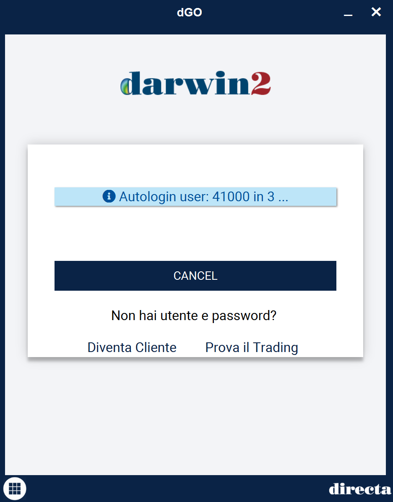
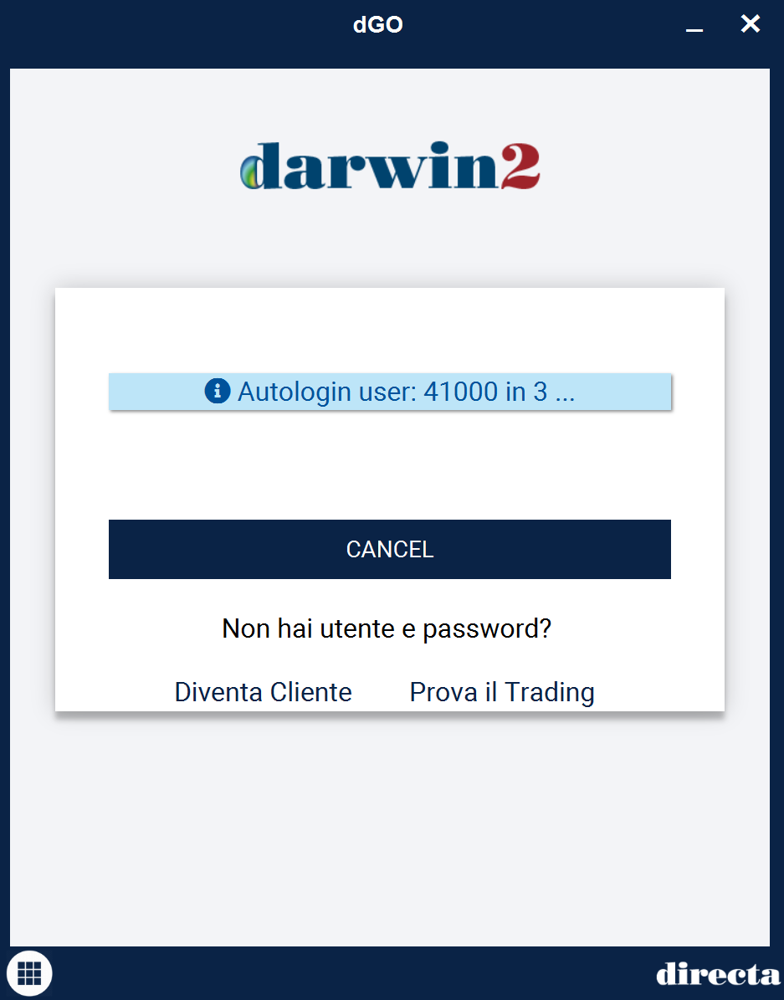
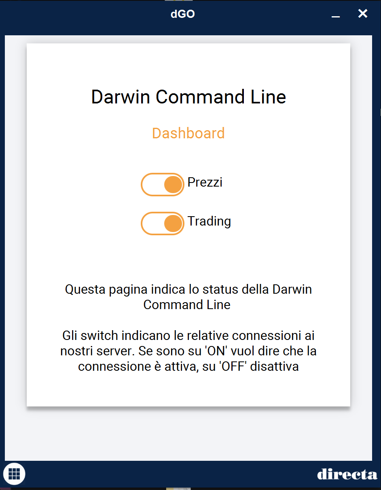
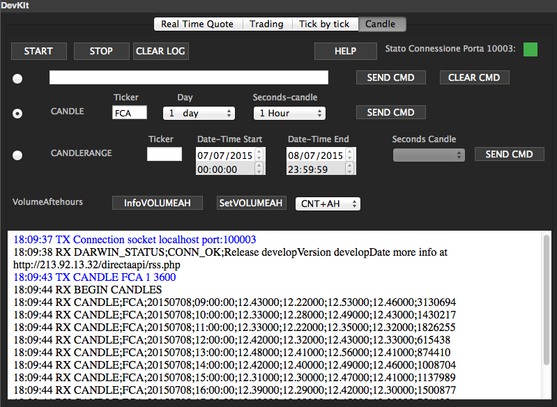
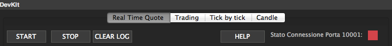
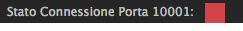
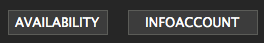
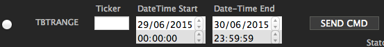
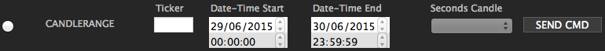

Introduzione
Abstract
Questo pagina è pensata per mettere in condizione chiunque voglia collegare un software, sviluppato personalmente o da terze parti, al flusso informativo e al sistema di trading di Directa S.I.M.p.A. I servizi sono essenzialmente tre:
API
Questo servizio utilizza il metodo classico dei server socket, ovvero la connessione ad una porta tramite il proprio host locale (127.0.0.1). Sono disponibli tre canali:
PORTA SERVIZIO 10001 Connessione al DATAFEED10002 Connessione al TRADING10003 Connessione per le CHIAMATE STORICHE
Per avere la ricezione dei Socket è necessario aprire la Darwin ed essere abilitati al Servizio Prezzi.
Nella sezione TUTORIAL è presente un esempio per provare la connessione direttamente da riga di comando e esempi di connessione con linguaggi di programmazione differenti. Ogni servizio ha dei suoi comandi specifici che genereranno una risposta o risposte. Nella sezione FUNZIONALITÀ COMUNI è sono specificati gli usi che ogni servizio mette a disposizione.
I comandi devono essere utilizzati come descritto negli esempi sottostanti, bisogna tenere conto di punteggiatura e spazi, se il comando non ha una sintassi corretta si genererà un messaggio di risposta che indica l'errore, in questa sezione vengono elencati tutti gli errori.
Non è necessario attivare tutti e tre i canali insieme, ma ogni servizio è usufruibile anche singolarmente.PROXIMITY
È in fase di strutturazione l'offerta ai clienti retail di eseguire software propri o di terze parti in proximity, ovvero all‹interno del network della stessa struttura in cui sono collocati i server Directa collegati ai mercati. Questo servizio, previe valutazioni di conformità tecnica e legale atte a verificare il rispetto delle normative vigenti, è un servizio il cui costo e la cui tempisitca possono variare notevolmente a seconda delle richieste utente.
Si noti che, al netto del non trascurabile vantaggio di annullare i tempi internet di round trip legati alla distanza tra i server e la postazione utente, questa collocazione non fornisce canale alternativo e/o preferenziale nell‘immisione dell‘ordine. Per ulteriori informazioni su questa opzione fare riferimento ai seguenti contatti011 53.01.01

TESSERA DARWIN
È in fase di strutturazione la possibilità di creazione di una tessera di Darwin. L'utente in base al proprio sistema può interagire con l'interfaccia attuale della Darwin. Per ulteriore informazione su questa opzione fare riferimento ai seguenti contatti
011 53.01.01
Termini di Servizio
Nel progetto della piattaforma di trading DARWIN di Directa è prevista la possibilità di integrare nuove funzioni, realizzate non solo dal gruppo di lavoro interno, ma anche da programmatori indipendenti.
Gli strumenti per estendere Darwin sono gratuiti.
Sono attualmente in fase di realizzazione tre diverse possibilità di interfacciamento con applicazioni software esterne, la cui la disponibilità attuale o futura è indicata qui di seguito.
Accettazione delle norme del servizio API Darwin
Come consueto, Directa chiede alle persone interessate a realizzare programmi esterni di rispettare alcune norme e di sottoscrivere un accordo per fruire delle API e degli altri strumenti connessi.Per far questo, è sufficiente reinoltrare firmata a Directa l'email di consenso che viene inviata ai clienti che comunicano il loro interesse verso lo sviluppo API.
Informazioni Preliminari
Come accedere ai servizi API Darwin
Il servizio è totalmente gratuito, ma sottoposto a controllo da parte di Directa.Per l'abilitazione è necessario passare dal conto nella pagina "Tabellone" e cliccare su info>5a>3h.
Servizi disponibili
- Documentazione – Il programmatore ha accesso a un sito wiki con la documentazione tecnica delle API. Attualmente non può interagire con il contenuto della documentazione, possibilità che verrà presa in considerazione solo in futuri aggiornamenti del sito e per specifiche necessità.
Il conto di prova
Le attuali normative non permettono in alcun caso di accedere ai servizi forniti dalle Borse
senza le opportune credenziali e senza il rispetto di alcune norme disciplinari molto precise.
Per questa ragione Directa non fornisce alcun conto prova per sviluppare applicazioni esterne:
è necessario, prima di tutto, che il programmatore interessato a utilizzare le interfacce
e le API di Darwin sia dotato di un regolare numero di conto presso Directa.
Distribuzione dei programmi realizzati
Come precedentemente indicato, la ridistribuzione del software realizzato tramite le API deve essere esplicitamente approvata da Directa. Directa non intende avvalersi di alcun vantaggio economico nella distribuzione di programmi e plugin sviluppati da terze parti, ma naturalmente non potrà permettere che un software di terze parti renda la piattaforma Darwin o i servizi dei server Directa inefficienti o insicuri, sia per i fruitori dei plugin in oggetto, sia di riflesso per gli altri utenti. Dall'accordo tra Directa e lo sviluppatore potrebbero inoltre nascere opportunità di collaborazione tecnica o commerciale che dovranno essere valutate di volta in volta.Stato avanzamento progetto
Ricezione del flusso prezzi
Servizio attualmente disponibile
Un programma esterno può connettersi a una specifica porta IP locale di Darwin. Fornendo opportuni comandi di sottoscrizione degli strumenti finanziari desiderati, si ottiene la ricezione in tempo reale delle quotazioni da parte del programma.
TRADING
Servizio disponibile in effettivo
Darwin consente a un programma esterno l'accesso a una seconda porta IP locale, distinta da quella utilizzabile per ricevere il flusso prezzi, attraverso la quale il programma può dare disposizioni operative ai server Directa (ordine, modifica ordine, revoca, etc.) e ricevere informazioni connesse (disponibilità, portafoglio, etc.).
Creazione Tessera Darwin
Servizio in fase di sviluppo
Il programmatore, utilizzando la documentazione delle API Darwin e il kit di sviluppo fornito da Directa, può realizzare una propria estensione (plugin) di Darwin, visibile come una tessera della piattaforma e integrata con la scrivania Darwin e le altre tessere native. Il kit di sviluppo e la documentazione saranno disponibili prossimamente.
Funzionalità comuni per tutti i flussi
Come Funziona
Il plugin Servizio Prezzi (SP) consente all'utente di esportare i dati dalla piattaforma Darwin verso l'esterno della piattaforma stessa.
Il metodo utilizzato è quello classico classico del server socket in attesa su una o più porte locali.
Aprendo la Darwin ci saranno a disposizione 3 porte, nel dettaglio la porta 10001 per la ricezione DataFeed, la 10002 per il Trading
e la 10003 per le chiamate storiche, le porte sono aperte localmente(localhost o 127.0.0.1 a seconda del sistema operativo)
e sono a disposizione fino a che la Darwin rimarrà aperta, possono gestire una o più connessioni da parte del client.
Nella sezione TUTORIAL sono a disposizione degli esempi di connessione al servizio.
Avvenuta la connessione alla porta/e, è possibile ricevere i dati richiesti tramite i comandi predisposti per il servizio.
I messaggi, siano essi di sottoscrizione (client-->Darwin) o di ricezione (Darwin-->client) sono in formato
stringa (UTF-8) e terminati dal carattere di NEWLINE (in funzione del sistema operativo).
Per inviare/ricevere messaggi è sufficiente quindi rispettivamente utilizzare una writeline o una readline
(istruzione presente nella maggior parte dei linguaggi di programmazione).
Il plugin sottoscrive in automatico sul sistema Darwin i titoli che vengono richiesti.
Qualora si tentasse di sottoscrivere più volte lo stesso titolo verrebbe restituito un errore e in maniera analoga si ottiene un
errore se si tenta di desottoscrivere un titolo non sottoscritto.
Il numero massimo di titoli sottoscrivibili è quello fissato dalla piattaforma Darwin.
Avvio del Plugin
Se l'utente è abilitato al plugin, il servizio viene avviato automaticamente con la piattaforma Darwin; in caso contrario il servizio non sarà disponibile.
Il servizio apre tre Socket server TCP/IP (uno per l'informativa, uno per il trading e uno per le chiamate storiche) in ascolto sulle porte configurate (di default rispettivamente 10001, 10002 e 10003) e attende i messaggi provenienti dal client.
È possibile aprire più connessioni sullo stesso socket. Il plugin gestirà in automatico l'inoltro dei messaggi al client che ne ha fatto richiesta.
Gestione HeartBeat
Il segnale di vita è utilizzato per mantenere attiva la connessione. Infatti, in presenza di connessioni scadenti, il socket potrebbe essere chiuso inaspettatamente.
Per evitare questo comportamento il servizio prezzi prevede l'invio di un pacchetto "Heartbeat" costituito dal carattere H (codice Ascii 72).
Ovviamente è cura dello sviluppatore gestire in base alle esigenze il segnale HeartBeat.
Il servizio prezzi invia in automatico il segnale di vita ogni 10 secondi.
Formato del Messaggio di Heartbeat:
H\NEWLINE
Gestione Chiusura Darwin tramite API
Il comando oltre a chiudere la Darwin senza dover interagire con l'interfaccia grafica di Darwin od eventualmente killando il processo, garantisce anche il salvataggio della propria scrivania di Darwin. Il comando è disponibile in tutte e tre le connessioni socket ( datafeed, trading e chiamate storiche) Di seguito il funzionamento:
Comando: CLOSEDARWIN
la risposta prima della partenza del processo di chiusura sarà così composta:
RUN close Darwin : save(true)
Il save(true) sta ad indicare che la scrivania verrà salvata.
Nel caso non si voglia salvare la scrivania della Darwin è possibile chiudere in questo modo:
CLOSEDARWIN FALSE
e la risposta sarà questa:
RUN close Darwin : save(false)
Il procedimento di chiusura è lo stesso ma non verranno presi in considerazione i cambiamenti alla scrivania di Darwin.
Connessione Darwin Flusso Prezzi e Trading
Questo implica che la Darwin non permette un utilizzo H24 ma che deve essere riavviata una volta al giorno facendo riferimento alla disconessione della mezzanotte, in questa schedulazione può utile creare dei sistemi che utilizzano la dGO così da potersi schedulare delle autoriconnessioni tramite degli script.
Utilizzo utenze diverse sullo stesso PC
Di default le nostre API su utenza singola si mettono in comunicazione su queste porte:
10001
DATAFEED10002
TRADING10003
CHIAMATE STORICHE10004 porta di servizio (utilizzata esclusivamente per le nostre gestioni)
Per fare in modo che più utenze convivano insieme abbiamo dovuto utilizzare porte diverse per utenze diverse, quindi lanciando una seconda utenza questa sarà così formata:
10005
DATAFEED10006
TRADING10007
CHIAMATE STORICHE10008 porta di servizio (utilizzata esclusivamente per le nostre gestioni)
Di conseguenza altre utenze lanciate si metteranno sempre nelle 4 porte successive.
Facciamo qualche esempio di utilizzo:
esempio 1:
abbiamo 3 utenze attive A B e C, le porte saranno così composte:
utenza A 10001,10002,10003,10004
utenza B 10005,10006,10007,10008
utenza C 10009,10010,10011,10012
Se viene staccata l'utenza C, il risultato delle porte attive sarà:
utenza A 10001,10002,10003,10004
utenza B 10005,10006,10007,10008
esempio2:
abbiamo 3 utenze attive A B e C, le porte saranno così composte:
utenza A 10001,10002,10003,10004
utenza B 10005,10006,10007,10008
utenza C 10009,10010,10011,10012
Se viene staccata l'utenza A, il risultato delle porte attive sarà:
utenza B 10005,10006,10007,10008
utenza C 10009,10010,10011,10012
Se viene attivata in questo momento un'utenza D il risultato delle porte sarà:
utenza D 10001,10002,10003,10004
utenza B 10005,10006,10007,10008
utenza C 10009,10010,10011,10012
La situazione delle porte sarà sempre aggiornata in un file che verà creato in questo path: cartellaUtente/.directa/engine/APIPortSettings.txt
dove il contenuto del file sarà così:
55351;10001;10002;10003
41000;10005;10006;10007
il tracciato del file è : codiceUtente;portaPrezzi;portaTrading;portaChiamatestoriche (La porta di servizio non viene notificata in questo file, non essendo utile per gli sviluppi tramite API).
Altro modo per avere il contenuto del file di settings delle porte è lanciare il comando SETCONNECTION nella connessione
DATAFEED, la risposta sarà di questo tipo:BEGIN PORT
55351;10001;10002;10003
41000;10005;10006;10007
END PORT
Il fatto di leggere direttamente il file o utilizzare il comando è a discrezione dell'utente sviluppatore.
NB questa funzionalità è disposinibile sull'ultima versione di DarwinCommandLine e nella versione di Darwin2 attualmente in fase di test.
Comandi Informativi verso il Server
È possibile richiedere informazioni al Servizio Prezzi circa la situazione del portafoglio eseguendo alcuni comandi specifici sul canale di trading.
<CODICE COMANDO>\n
I possibili valori per <CODICE COMANDO> sono i seguenti:
| COMANDO | FLUSSO | AZIONE |
|---|---|---|
| INFOSTOCKS | TRADING |
Elenco azioni in portafoglio e in negoziazione |
| INFOAVAILABILITY | TRADING |
Situazione liquidità portafoglio |
| DARWINSTATUS | ALL |
Restituisce le informazioni di versione e lo stato della connessione |
| GETPOSITION | TRADING |
Restituisce informazioni sulla posizione di un singolo strumento nello stesso formato del comando INFOSTOCKS |
| INFOACCOUNT | TRADING |
Restituisce informazioni sullo stato patrimoniale del conto |
| ORDERLIST | TRADING |
Restituisce l'elenco degli ordini (tutti) |
| TABLELIST | ALL |
Restituisce le tabelle impostate sul proprio conto |
| TABLE | ALL |
Restituisce l'elenco dei tickers presenti in una determinata tabella |
Comando: GETPOSITION FCA
Utilizzare nel modo specificato nell'esempio: comando _spazio_ ticker.
Comando: INFOSTOCKS
Quando si necessita di sapere le informazioni relative all azioni in portafoglio ed in negoziazione è necessario mandare al sistema un comando del tipo:
INFOSTOCKS \n
Comando: ORDERLIST
Quando si necessita di sapere la lista dei propri ordini è necessario mandare al sistema un comando del tipo:
ORDERLIST \n
Riscontrando che la lista ordini può diventare molto folta a causa delle operazioni che si possono effettuare, abbiamo creato dei comandi che permettono l'accesso a delle liste oridni filtrate. I due nuovi comandi a disposizione sono:
- ORDERLISTNOREV - lista comprendente solamente gli ordini pending e eseguti
- ORDERLISTPENDING - lista comprendente solamente gli ordini pending, verrano scartati i revocati e gli eseguiti
NB nell'ambito della creazione di questi comandi abbiamo deciso, per non appesantire la connessione iniziale al trading, che se la lista ordini è maggiore o uguale a 100
la lista ordini sarà l'equivalente del comando ORDERLISTNOREV, così da avere come dettaglio iniziale gli ordini eseguiti ed eventuai pending, non ci fossero pending o eseguiti ma la lista revocati supera i 100 verrà mandato un codice errore 1019
ma in realtà la lista non è vuota. Ovviamente la consultazione della ORDERLIST nativa, comprendente tutti gli ordini è sempre garantita. Questa gestione del limite 100 è
solamente in funzione all'atto della connessione del socket Trading.I dettagli delle risposte degli ordini sono trattate nella sezione successiva.
Formato dei messaggi verso il Client
Il servizio prezzi invia al client i messaggi informativi sul socket di trading sotto forma di stringa, terminati dal carattere NEWLINE (ASCII 10 \n).
Il formato generico del messaggio è il seguente:
<TIPO_MESSAGGIO> ; <TICKER> ; <ORA HH:MM:SS>;<DATI...> \n
I possibili valori per <TIPO MESSAGGIO> sono i seguenti:
| CODICE | FLUSSO | SIGNIFICATO |
|---|---|---|
| STOCK | TRADING |
Informazioni di portafoglio (azioni in carico e in negoziazione) |
| AVAILABILITY | TRADING |
Liquidità portafoglio (con e senza marginatura) |
| DARWIN_STATUS | ALL |
Stringa con informazioni sulla connessione e versione |
| INFOACCOUNT | TRADING |
Informazioni sullo stato del conto |
| ORDER | TRADING |
Elenco ordini |
Formato messaggio STOCK
STOCK; <TICKER> ; <ORA HH:MM:SS> ; <QUANTITA IN PORTAFOGLIO> ; <QUANTITA DIRECTA> ; <QUANTITA IN NEGOZIAZIONE> ; <PREZZO MEDIO> ; <GAIN>\n
Esempio di record STOCK per il titolo A2A(4 azioni in portafoglio e 4 azioni in negoziazione):
STOCK;A2A;10:40:58;4;0;4;1.2375;-1;-1\n
NB Il flusso STOCK è scatenato dai comandi:- INFOSTOCKS - ritorna l'intero Elenco azioni in portafoglio e in negoziazione
- GETPOSITION ticker - ritorna informazioni sulla posizione di un singolo strumento nello stesso formato del comando INFOSTOCKS
NB Indicazioni per il campo <QUANTITÀ IN NEGOZIAZIONE>
Il dettaglio può avere diversi tipi di risposta:
- STOCK;FCA;09:54:38;0;1;1>;0.0;; Quando compare il dettaglio <val> > significa che l'ordine è preso in carico da Directa e si può notare che il dettaglio quantità in Directa vale 1 (sengnalato nel record con il colore blu).
- STOCK;FCA;09:54:41;0;0;1;0.0;; In questo dettaglio successivo si può notare che il > non è più presente significa che l'ordine è stato preso in carico da Borsa e il dettaglio quantità in Directa è tornato ad essere 0 (segnalato nel record con il colore blu).
- STOCK;FCA;10:03:16;0;1;1> 1;0.0;; In questo esempio si può notare sia un dettaglio <val> > insieme ad un dettaglio <val> , sta a significare che un ordine è già presso borsa mentre un altro è ancora presso Directa segnalato con il dettaglio >.
- STOCK;FCA;10:03:18;0;0;2;0.0;; In questo esempio si può notare come il segnale > sia sparito e il numero degli ordini è salito perchè sono presenti due ordini, in questo esempio per il titolo FCA, presso borsa.
- A seguito di una revoca (e.g REVORD <ID_ORD>) -> STOCK;FCA;10:09:15;0;0;1;0.0;; Si può notare come il dettaglio quantità in negozazione sia regredito di un unità a seguito di una revoca di un titolo.
- Quantità in negozazione vale 0* Questo si può verificare quando avendo una azione in portafoglio si mette una stop sia in acquisto che in vendita sullo stesso strumento, il dettaglio * sta ad indicare che non è un reale zero ma un zero condizionato da altre operazioni.
Formato messaggio AVAILABILITY
AVAILABILITY; <ORA HH:MM:SS> ; <DISPONIBILITA' AZIONI> ; <DISPONIBILITA' AZIONI CON MARGINATURA> ; <DISPONIBILITA' DERIVATI> ; <DISPONIBILITA' DERIVATI CON MARGINATURA> ; <LIQUIDITA' TOTALE>\n
Esempio di record AVAILABILITY:
AVAILABILITY;14:47:04;1000;5000;0;0;5000\n
Formato messaggio DARWIN_STATUS
DARWIN_STATUS; <STATO CONNESSIONE> ;<RELEASE>\n
Possibili valori per STATO CONNESSIONE-:
| CODICE | SIGNIFICATO |
|---|---|
| CONN_UNAVAILABLE | Connessione non attiva |
| CONN_SLOW | Connessione lenta |
| CONN_OK | Connessione attiva |
| CONN_TROUBLE | Connessione con problemi |
Esempio di record DARWIN_STATUS:
DARWIN_STATUS;CONN_OK;Release 1.00 20130101\n
Formato messaggio INFOACCOUNT
INFOACCOUNT; <ORA HH:MM:SS> ; <CODICE CONTO DIRECTA> ; <LIQUIDITA'> ; <GAIN EURO> ; <OPEN PROFIT/LOSS>\n
Esempio di record INFOACCOUNT per il titolo Fiat (10 azioni in portafoglio e 10 azioni in negoziazione):
INFOACCOUNT;12:49:11;40000;150000;1200;430
Formato messaggio ORDER
ORDER;<TICKER> ; <ORA_ORDINE HH:MM:SS> ; <ID ORDINE> ; <TIPO OPERAZIONE> ; <PREZZO LIMITE> ; <PREZZO SEGNALE> ; <QUANTITA'> ; <STATO ORDINE>\n
NB L'orario del flusso ORDER indica l'ora esatta dell'immissione dell'ordine, nel caso ci fossero dei problemi con il reperimento dell'orario verrà messo il dettaglio 00:00:00.
Possibili valori per <STATO ORDINE>:
| CODICE | SIGNIFICATO |
|---|---|
| 2000 | In negoziazione |
| 2001 | Errore immissione |
| 2002 | In negoziazione dopo conferma ricevuta |
| 2003 | Eseguito |
| 2004 | Revocato |
| 2005 | In attesa di conferma |
Esempio di record ORDER per il titolo FIAT CHRYSLER AUTO in negoziazione (10 azioni in acquisto a 4.20):
ORDER;FCA;16:20:40;ORD1;ACQAZ;4.75;0.0;10;2000\n
NBIl flusso ORDER è scatenato dal comando ORDERLIST che restituisce l'elenco degli ordini (tutti).Formato messaggio TABLELIST
Restituisce i nomi delle tabelle presenti sul proprio conto
Esemmpio: Inviado un comando TABLELIST\n
BEGIN TABLE
AP;PATRIMONIO
A0;PORTAFOGLIO
M0;MOT
AZ;FIB
A*;STKF A-L
AS;STKF M-Z
AO;OPTIONS
AC;COMBO
A$;EUREX-CME-LIFFE
AD;CME FX
AL;FOREX
AN;LMAX CFD
A1;PRIMA
A2;STAR
A3;PROVATAB
B0;PORTAFOGLIO US
B1;PRIMA
END TABLE
Il flusso è caratterizzato da due marcatori uno di inizio flusso BEGIN TABLE e uno di fine flusso END TABLE. I nomi delle tabelle sono così formati <codice;nome>. È importante utilizzare i nomi in questo modo, perchè in fase di creazione della tabella esiste la possibilità di crearle con lo stesso nome, ma avranno comunque un codice diverso. In questo esempio si possono notare le due tabelle A1;PRIMA e B1;PRIMA, hanno lo stesso nome ma codice diverso, questo perchè la prima si riferisce al mercato italiano mentre la seconda a quello americano.
Formato messaggio TABLE
Restituisce l'elenco dei tickers/descrizione all'interno di una tabella, è necessario utilizzare il comando in questo modo
TABLE <nome_tabella>
I nomi da utilizzare devono essere uguali ai nomi che vengono ritornati dal comando TABLELIST. Esempio di risposta per comando TABLE A1;PRIMA
BEGIN LIST A1;PRIMA (9)
AGL;AUTOGRILL SPA
ASR;A.S.ROMA SPA
ATL;ATLANTIA
AZM;AZIMUT
A2A;A2A SpA
BMPS;B.MONTE PASCHI SI
BP;BANCO POPOLARE
BPE;BCA POP EMIL ROMAGNA
BZU;BUZZI UNICEM
END LIST
Il flusso è caratterizzato dai marcatori inizio flusso, in questo caso BEGIN LIST <A1;PRIMA (9)> e fine flusso END LIST. Il marcatore di inizio flusso ha sempre il dettaglio BEGIN LIST ed eventualmente il dettaglio con nome mercato e il numero degli item della lista tickers/descrizione.
NB: Per porter sfruttare il comando TABLE <nome_tabella> è sempre necessario prima richiamare il comando TABLELIST in modo che il sistema riesca ad inizializzare tutte le informazioni relative alle proprie tabelle.
Codici errori
Di seguito i codici comunicati al client in casso di messaggio ERR:
| CODICE | NOME | DESCRIZIONE | FLUSSO |
|---|---|---|---|
| 0 | ERR_UNKNOWN | Errore generico | Tutti i flussi |
| 1000 | ERR_MAX_SUBSCRIPTION_OVERFLOW | Limite massimo di titoli sottoscritti raggiunto | DATAFEED |
| 1001 | ERR_ALREADY_SUBSCRIBED | Titolo richiesto già sottoscritto | DATAFEED |
| 1002 | ERR_EMPTY_LIST | Nessun titolo inviato nel comando | DATAFEED |
| 1003 | ERR_UNKNOWN_COMMAND | Comando sconosciuto | Tutti i flussi |
| 1004 | ERR_COMMAND_NOT_EXECUTED | Comando non eseguito | Tutti i flussi |
| 1005 | ERR_NOT_SUBSCRIBED | Errore sottoscrizione | DATAFEED |
| 1006 | ERR_DARWIN_STOP | Chiusura Darwin in corso | Tutti i flussi |
| 1007 | ERR_BAD_SUBSCRIPTION | Errore titolo inesistente | Tutti i flussi |
| 1008 | ERR_DATA_UNAVAILABLE | Flusso richiesto non disponibile | DATAFEED |
| 1009 | ERR_TRADING_CMD_INCOMPLETE | Comando trading non completo | TRADING |
| 1010 | ERR_TRADING_CMD_ERROR | Comando trading errato | TRADING |
| 1011 | ERR_TRADING_UNAVAILABLE | Trading non abilitato | TRADING |
| 1012 | ERR_TRADING_REQUEST_ERROR | Errore immissione ordine | TRADING |
| 1013 | ERR_HISTORYCALL_PARAMS | Errore numero paramentri nel comando | CHIAMATE STORICHE |
| 1015 | ERR_HISTORYCALL_RANGE_INTRADAY | Errore range per chiamate intraday, con dettaglio massimo range disponibile per l'intraday | CHIAMATE STORICHE |
| 1016 | ERR_HISTORYCALL_DAY_OR_RANGE | Errore nei giorni o nel range date nel comando inviato | CHIAMATE STORICHE |
| 1018 | ERR_EMPTY_STOCKLIST | Nessuno strumento nel portafoglio | TRADING |
| 1019 | ERR_EMPTY_ORDERLIST | Nessun ordine presente | TRADING |
| 1020 | ERR_DUPLICATED_ID | ID Ordine duplicato | TRADING |
| 1021 | ERR_INVALID_ORDER_STATE | Stato ordine incongruente con l'operazione richiesta | TRADING |
| 1024 | ERR_TRADING_PUSH_DISCONNECTED | Sengala la disconnessione del trading | TRADING |
| 1030 | ERR_MARKET_UNAVAILABLE | Mercato non abilitato per il ticker richiesto | DATAFEED |
| 1031 | CONTATTO_NON_ATTIVO | Contatto verso il nostro server di trading scuduto, necessario riavviare l'applicazione per fare operazioni di trading | TRADING |
DataFeed
Comandi sottoscrizione/desottoscrizione verso il Server
COMANDI DI SOTTOSCRIZIONE/DESOTTOSCRIZIONE
NB È bene ricordare che, indipendentemente dal numero di connessioni che si stabiliscono con la porta 10001, il limite massimo di titoli sottoscrivibili da Darwin è al momento pari a 100.
Per sottoscrivere/desottoscrivere uno i più strumenti è necessario inviare al servizio un messaggio nel seguente formato:
<CODICE SOTTOSCRIZIONE> <ELENCO TICKER SEPARATO DA VIRGOLA>\n
I possibili valori per <CODICE SOTTOSCRIZIONE> sono i seguenti:
| CODICE | FLUSSO | PORTA | TIPO | DATI |
|---|---|---|---|---|
| SUB | DATAFEED |
10001 | Sottoscrizione standard | Eseguiti + Book 5 livelli |
| SUBALL | DATAFFED |
10001 | Tutti i flussi | Eseguiti + Book 5 livelli + Bidask |
| SUBPRZ | DATAFEED |
10001 | Solo Prezzi | Eseguiti |
| SUBPRZALL | DATAFEED |
10001 | Prezzi e Bidask | Eseguiti + Bidask |
| SUB10 | DATAFEED |
10001 | Tutti i flussi | Eseguiti + Book 5 livelli + Book 10 livelli + Bidask |
| SUB15 | DATAFEED |
10001 | Tutti i flussi | Eseguiti + Book 5 livelli + Book 10 livelli + Book 15 livelli + Bidask |
| SUB20 | DATAFEED |
10001 | Tutti i flussi | Eseguiti + Book 5 livelli + Book 10 livelli + Book 15 livelli + Book 20 livelli + Bidask |
Esempio di sottoscrizione del flusso prezzi per il titolo FIAT CHRYSLER AUTO
SUBPRZ FCA\n
Esempio di sottoscrizione del flusso standard per i titolo FIAT CHRYSLER AUTO, Eni, Luxottica
SUB FCA,ENI,LUX\n
Per cancellare una o più sottoscrizioni invece è sufficiente inviare il comando come riportato nella tabella seguente:
| CODICE | TIPO | PORTA | DATI |
|---|---|---|---|
| UNS | Desottoscrizione | 10001 | Tutti i flussi |
UNS FCA\n
NB: I codici di sottoscrizione/desottoscrizione sono case sensitive; non è possibile cambiare il tipo di sottoscrizione per un titolo. È necessario desottoscrivere il titolo e risottoscriverlo con il codice desiderato.
Informazioni relative alle condizioni per il mercato FOREX alla pagine LMAX FOREX | Mercato Valutario di Directa Sim
Formato messaggi comandi sottoscrizione/desottoscrizione verso il client
FORMATO DEI MESSAGGI
Il servizio prezzi invia al client i messaggi sotto forma di stringa, terminati dal carattere NEWLINE (ASCII 10 \n).
Il formato generico del messaggio è il seguente:
<TIPO_MESSAGGIO> ; <TICKER|CODICE ERRORE> ; <ORA HH:MM:SS> ; <DATI(ndati)>\n
I possibili valori per <TIPO MESSAGGIO> sono i seguenti:
| CODICE | FLUSSO | DESCRIZIONE |
|---|---|---|
| ANAG | DATAFEED |
Informazioni anagrafiche |
| PRICE | DATAFEED |
Eseguito |
| PRICE_AUCT | DATAFEED |
Eseguito Asta (tutte le aste) |
| BOOK_5 | DATAFEED |
Book a 5 livelli |
| BOOK_10 | DATAFEED |
Book livelli da 6 a 10 |
| BOOK_15 | DATAFEED |
Book livelli da 11 a 15 |
| BOOK_20 | DATAFEED |
Book livelli da 16 a 20 |
| BIDASK | DATAFEED |
Bid/ask |
Il campo <DATI> assume valori diversi in funzione dell'informazione trasmessa.
Formato messaggio ANAG
<TIPO_MESSAGGIO> ; <TICKER> ; <ORA HH:MM:SS> ; <CODICE ISIN> ; <DESCRIZIONE> ; <PREZZO RIFERIMENTO> ; <PREZZO APERTURA> ; <FLOTTANTE>\n
Esempio di record ANAG per il titolo FIAT CHRYSLER AUTO:
ANAG;FCA;16:18:13;NL0010877643;FIAT CHRYSLER AUTO;6.875;0.0;1202181255 \n
Formato messaggio PRICE
<TIPO_MESSAGGIO> ; <TICKER> ; <ORA HH:MM:SS> ; <PREZZO> ; <QUANTITÀ AZIONI> ; <PROGRESSIVO AZIONI> ; <PROGRESSIVO CONTRATTI> ; <MINIMO DI GIORNATA> ; <MASSIMO DI GIORNATA>\n
Esempio di record PRICE per il titolo FIAT CHRYSLER AUTO:
PRICE;FCA;16:18:11;6.73;10;17917975;10150;6.57;6.93\n
Esempio di record PRICE per il titolo FIAT CHRYSLER AUTO per mostrare il progressivo Azioni e Contratti della giornata:
PRICE;FCA;15:53:53;15.74;127;29119600;23825;15.67;16.29\n
PRICE;FCA;15:53:53;15.74;500;29120100;23826;15.67;16.29\n
PRICE;FCA;15:53:53;15.74;1873;29121973;23827;15.67;16.29\n
Formato messaggio PRICE_AUCT
<TIPO_MESSAGGIO> ; <TICKER> ; <ORA HH:MM:SS> ; <PREZZO>\n
Esempio di record PRICE_AUCT per il titolo FIAT CHRYSLER AUTO:
PRICE_AUCT;FCA;16:28:56;7.8\n
Formato messaggio BIDASK
<TIPO_MESSAGGIO> ; <TICKER> ; <ORA HH:MM:SS> ; <QUANTITÀ AZIONI ACQUISTO LIVELLO 1> ; <NUM PROPOSTE ACQUISTO LIVELLO 1> ; <PREZZO ACQUISTO LIVELLO 1> ; <QUANTITÀ AZIONI VENDITA LIVELLO 1> ; <NUM PROPOSTE VENDITA LIVELLO 1> ; <PREZZO VENDITA LIVELLO 1>\n
Esempio di record BIDASK per il titolo FIAT CHRYSLER AUTO:
BIDASK;FCA;16:41:21;14381;0;6.795;5458;0;6.805\n
NB: Il dato relativo al numero di PROPOSTE potrebbe non essere disponibile in funzione del mercatodi appartenenza del titolo.
Non essendo disponibile si può far riferimento al dettaglio del flusso Book(spiegato nel dettaglio
nel paragrafo successivo) che riporta le proposte al livello 1 del book.
Formato messaggio BOOK_5
<TIPO_MESSAGGIO> ; <TICKER> ; <ORA HH:MM:SS> ; <QUANTITA AZIONI ACQUISTO LIVELLO 1> ; <NUM PROPOSTE ACQUISTO LIVELLO 1> ; <PREZZO ACQUISTO LIVELLO 1> ; <QUANTITÀ AZIONI ACQUISTO LIVELLO 2> ; <NUM PROPOSTE ACQUISTO LIVELLO 2> ; <PREZZO ACQUISTO LIVELLO 2> ; <QUANTITÀ AZIONI ACQUISTO LIVELLO 3> ; <NUM PROPOSTE ACQUISTO LIVELLO 3> ; <PREZZO ACQUISTO LIVELLO 3> ; <QUANTITÀ AZIONI ACQUISTO LIVELLO 4> ; <NUM PROPOSTE ACQUISTO LIVELLO 4> ; <PREZZO ACQUISTO LIVELLO 4> ; <QUANTITÀ AZIONI ACQUISTO LIVELLO 5> ; <NUM PROPOSTE ACQUISTO LIVELLO 5> ; <PREZZO ACQUISTO LIVELLO 5> ; <QUANTITÀ AZIONI VENDITA LIVELLO 1> ; <NUM PROPOSTE VENDITA LIVELLO 1> ; <PREZZO VENDITA LIVELLO 1> ; <QUANTITÀ AZIONI VENDITA LIVELLO 2> ; <NUM PROPOSTE VENDITA LIVELLO 2> ; <PREZZO VENDITA LIVELLO 2> ; <QUANTITÀ AZIONI VENDITA LIVELLO 3> ; <NUM PROPOSTE VENDITA LIVELLO 3> ; <PREZZO VENDITA LIVELLO 3> ; <QUANTITÀ AZIONI VENDITA LIVELLO 4> ; <NUM PROPOSTE VENDITA LIVELLO 4> ; <PREZZO VENDITA LIVELLO 4> ; <QUANTITÀ AZIONI VENDITA LIVELLO 5> ; <NUM PROPOSTE VENDITA LIVELLO 5> ; <PREZZO VENDITA LIVELLO 5<\n
Esempio di record BOOK_5 per il titolo FIAT CHRYSLER AUTO:
BOOK_5;FCA;16:26:09;17743;6;6.755;31230;6;6.75;36723;11;6.745;48250;14;6.74;56771;11;6.735;7600;3;6.765;18795;8;6.77;15358;8;6.775;21212;10;6.78;12522;5;6.785\n
Formato messaggio BOOK_10
<TIPO_MESSAGGIO> ; <TICKER> ; <ORA HH:MM:SS> ; <QUANTITA AZIONI ACQUISTO LIVELLO 6> ; <NUM PROPOSTE ACQUISTO LIVELLO 6> ; <PREZZO ACQUISTO LIVELLO 6> ; <QUANTITÀ AZIONI ACQUISTO LIVELLO 7> ; <NUM PROPOSTE ACQUISTO LIVELLO 7> ; <PREZZO ACQUISTO LIVELLO 7> ; <QUANTITÀ AZIONI ACQUISTO LIVELLO 8> ; <NUM PROPOSTE ACQUISTO LIVELLO 8> ; <PREZZO ACQUISTO LIVELLO 8> ; <QUANTITÀ AZIONI ACQUISTO LIVELLO 9> ; <NUM PROPOSTE ACQUISTO LIVELLO 9> ; <PREZZO ACQUISTO LIVELLO 9> ; <QUANTITÀ AZIONI ACQUISTO LIVELLO 10> ; <NUM PROPOSTE ACQUISTO LIVELLO 10> ; <PREZZO ACQUISTO LIVELLO 10> ; <QUANTITÀ AZIONI VENDITA LIVELLO 6> ; <NUM PROPOSTE VENDITA LIVELLO 6> ; <PREZZO VENDITA LIVELLO 6> ; <QUANTITÀ AZIONI VENDITA LIVELLO 7> ; <NUM PROPOSTE VENDITA LIVELLO 7> ; <PREZZO VENDITA LIVELLO 7> ; <QUANTITÀ AZIONI VENDITA LIVELLO 8> ; <NUM PROPOSTE VENDITA LIVELLO 8> ; <PREZZO VENDITA LIVELLO 8> ; <QUANTITÀ AZIONI VENDITA LIVELLO 9> ; <NUM PROPOSTE VENDITA LIVELLO 9> ; <PREZZO VENDITA LIVELLO 9> ; <QUANTITÀ AZIONI VENDITA LIVELLO 10> ; <NUM PROPOSTE VENDITA LIVELLO 10> ; <PREZZO VENDITA LIVELLO 10>\n
Esempio di record BOOK_10 per il titolo FIAT CHRYSLER AUTO:
BOOK_10;FCA;11:31:14;1445;2;18.456;3635;5;18.454;1045;2;18.452;2500;10;18.45;645;1;18.448;
2908;4;18.482;3215;4;18.484;2015;3;18.486;2839;3;18.488;4450;6;18.49\n
Formato messaggio BOOK_15
<TIPO_MESSAGGIO> ; <TICKER> ; <ORA HH:MM:SS> ; <QUANTITA AZIONI ACQUISTO LIVELLO 11> ; <NUM PROPOSTE ACQUISTO LIVELLO 11> ; <PREZZO ACQUISTO LIVELLO 11> ; <QUANTITÀ AZIONI ACQUISTO LIVELLO 12> ; <NUM PROPOSTE ACQUISTO LIVELLO 12> ; <PREZZO ACQUISTO LIVELLO 12> ; <QUANTITÀ AZIONI ACQUISTO LIVELLO 13> ; <NUM PROPOSTE ACQUISTO LIVELLO 13> ; <PREZZO ACQUISTO LIVELLO 13> ; <QUANTITÀ AZIONI ACQUISTO LIVELLO 14> ; <NUM PROPOSTE ACQUISTO LIVELLO 14> ; <PREZZO ACQUISTO LIVELLO 14> ; <QUANTITÀ AZIONI ACQUISTO LIVELLO 15> ; <NUM PROPOSTE ACQUISTO LIVELLO 15> ; <PREZZO ACQUISTO LIVELLO 15> ; <QUANTITÀ AZIONI VENDITA LIVELLO 11> ; <NUM PROPOSTE VENDITA LIVELLO 11> ; <PREZZO VENDITA LIVELLO 11> ; <QUANTITÀ AZIONI VENDITA LIVELLO 12> ; <NUM PROPOSTE VENDITA LIVELLO 12> ; <PREZZO VENDITA LIVELLO 12> ; <QUANTITÀ AZIONI VENDITA LIVELLO 13> ; <NUM PROPOSTE VENDITA LIVELLO 13> ; <PREZZO VENDITA LIVELLO 13> ; <QUANTITÀ AZIONI VENDITA LIVELLO 14> ; <NUM PROPOSTE VENDITA LIVELLO 14> ; <PREZZO VENDITA LIVELLO 14> ; <QUANTITÀ AZIONI VENDITA LIVELLO 15> ; <NUM PROPOSTE VENDITA LIVELLO 15> ; <PREZZO VENDITA LIVELLO 15>\n
Esempio di record BOOK_15 per il titolo FIAT CHRYSLER AUTO:
BOOK_15;FCA;11:35:32;3172;5;18.48;1906;3;18.478;3993;5;18.476;34141;4;18.474;1901;2;18.472;
1506;2;18.524;651;1;18.526;5651;2;18.528;5851;3;18.53;7599;5;18.532\n
Formato messaggio BOOK_20
<TIPO_MESSAGGIO> ; <TICKER> ; <ORA HH:MM:SS> ; <QUANTITA AZIONI ACQUISTO LIVELLO 16> ; <NUM PROPOSTE ACQUISTO LIVELLO 16> ; <PREZZO ACQUISTO LIVELLO 16> ; <QUANTITÀ AZIONI ACQUISTO LIVELLO 17> ; <NUM PROPOSTE ACQUISTO LIVELLO 17> ; <PREZZO ACQUISTO LIVELLO 17> ; <QUANTITÀ AZIONI ACQUISTO LIVELLO 18> ; <NUM PROPOSTE ACQUISTO LIVELLO 18> ; <PREZZO ACQUISTO LIVELLO 18> ; <QUANTITÀ AZIONI ACQUISTO LIVELLO 19> ; <NUM PROPOSTE ACQUISTO LIVELLO 19> ; <PREZZO ACQUISTO LIVELLO 19> ; <QUANTITÀ AZIONI ACQUISTO LIVELLO 20> ; <NUM PROPOSTE ACQUISTO LIVELLO 20> ; <PREZZO ACQUISTO LIVELLO 20> ; <QUANTITÀ AZIONI VENDITA LIVELLO 16> ; <NUM PROPOSTE VENDITA LIVELLO 16> ; <PREZZO VENDITA LIVELLO 16> ; <QUANTITÀ AZIONI VENDITA LIVELLO 17> ; <NUM PROPOSTE VENDITA LIVELLO 17> ; <PREZZO VENDITA LIVELLO 17> ; <QUANTITÀ AZIONI VENDITA LIVELLO 18> ; <NUM PROPOSTE VENDITA LIVELLO 18> ; <PREZZO VENDITA LIVELLO 18> ; <QUANTITÀ AZIONI VENDITA LIVELLO 19> ; <NUM PROPOSTE VENDITA LIVELLO 19> ; <PREZZO VENDITA LIVELLO 19> ; <QUANTITÀ AZIONI VENDITA LIVELLO 20> ; <NUM PROPOSTE VENDITA LIVELLO 20> ; <PREZZO VENDITA LIVELLO 20>\n
Esempio di record BOOK_20 per il titolo FIAT CHRYSLER AUTO:
BOOK_20;FCA;11:35:42;1766;3;18.47;1901;2;18.468;982;2;18.466;1291;2;18.464;4062;4;18.462;
16008;4;18.534;2040;3;18.536;1241;2;18.538;765;2;18.54;1285;2;18.542\n
Formato messaggio ERR
<TIPO_MESSAGGIO> ; <TICKER> ; <CODICE ERRORE>\n
Esempio di record ERR generico:
ERR;N/A;1003\n
Esempio di record ERR su comando specifico con titolo errato:
ERR;FFFF;1007\n
Informazione relative agli indici È possibile per gli INDICI avere sia le informazioni relative al real-time che ai dati storici.
La lista dei ticker relativa agli indici fa riferimento a questo elenco:
- DITA
- DGER
- DFRA
- FMIB
- FMBTL
- FMIDC
- FSTAR
- DAX
- SDX
- MDX
- TDX
- NDQ
- NDQ100
- DJ
Di seguito alcuni esempi di sottoscrizione per alcuni indici:
SUB FMIB <-- comando di sottoscrizione
PRICE;fMIB;10:23:21;23827.42;0;0;0;23814.62;23893.72
PRICE;fMIB;10:23:33;23827.6;0;0;0;23814.62;23893.72
PRICE;fMIB;10:23:33;23827.44;0;0;0;23814.62;23893.72
PRICE;fMIB;10:23:34;23827.12;0;0;0;23814.62;23893.72
PRICE;fMIB;10:23:35;23826.93;0;0;0;23814.62;23893.72
PRICE;fMIB;10:23:35;23827.16;0;0;0;23814.62;23893.72
UNS FMIB <-- comando desottoscrizione
SUB FMIDC <-- comando di sottoscrizione
PRICE;fMidC;10:27:45;34117.41;0;0;0;34040.7;34184.03
PRICE;fMidC;10:27:59;34120.27;0;0;0;34040.7;34184.03
PRICE;fMidC;10:28:14;34118.15;0;0;0;34040.7;34184.03
PRICE;fMidC;10:28:29;34112.11;0;0;0;34040.7;34184.03
UNS FMIDC <-- comando desottoscrizione
Per quanto riguarda le chiamate storiche fare riferimento alle istruzioni dei comandi dettagliati nella sezione
CHIAMATE STORICHE e utilizzare i Ticker presenti nell'elenco indicato in precedenza.
NBPer le chiamate storiche è necessario utilizzare i ticker degli indici in Maiuscolo come riportati nella lista, inseriti in maniera diversa il ticker non verrà riconosciuto.
Comandi diagnostici verso il Server
È possibile gestire il dettaglio di LOG inviando alcuni comandi specifici sul canale dei prezzi.
<CODICE COMANDO> {<OPZIONI>}\n
I possibili valori per <CODICE COMANDO> sono i seguenti:
| CODICE | FLUSSO | AZIONE |
|---|---|---|
| ENABLELOG | DATAFEED |
Abilita il LOG al massimo dettaglio. |
| DISABLELOG | DATAFEED |
Disabilita il LOG. Verranno tracciati solo i messaggi importanti e gli errori |
Formato messaggi verso il client comandi diagnostici
Il servizio prezzi invia al client i messaggi diagnostici sul socket dei prezzi sotto forma di stringa, terminati dal carattere NEWLINE (ASCII 10 \n).
Il formato generico del messaggio è il seguente:
<TIPO_MESSAGGIO>\n
I possibili valori per <TIPO MESSAGGIO> sono i seguenti:
| CODICE | SIGNIFICATO |
|---|---|
| LOG_ENABLED | Il LOG al massimo dettaglio è stato abilitato. |
| LOG_DISABLED | Il LOG al massimo dettaglio è stato disabilitato. |
Comandi dati storici -Funzione dismessa- utilizzare:CHIAMATE STORICHE
Trading
Comandi Trading verso il Server
Per effettuare operazioni di trading è necessario inviare al servizio un messaggio nel seguente formato:
<CODICE COMANDO> {<ID_ORDINE>},{<TICKER>,<QUANTITA'>},{<PREZZO>}\n
Il Servizio Prezzi può richiedere la conferma dell'ordine al client. In caso di richiesta conferma è necessario rispondere con apposito comando di conferma e <ID_ORDINE> corrispondente.
<ID_ORDINE> deve essere generato dal client ed essere univoco per la sessione corrente di connessione al socket.
I possibili valori per <CODICE AZIONE> sono i seguenti:
| CODICE | FLUSSO | AZIONE |
|---|---|---|
| ACQAZ | TRADING |
Acquista strumento finanziario al prezzo limite indicato |
| VENAZ | TRADING |
Vendi strumento finanziario al prezzo limite indicato |
| ACQMARK/ACQMARKET | TRADING |
Acquista strumento finanziario senza limite di prezzo |
| VENMARK/VENMARKET | TRADING |
Vendi strumento finanziario senza limite di prezzo |
| ACQSTOP | TRADING |
Acquista strumento finanziario con ordine stop market |
| VENSTOP | TRADING |
Vendi strumento finanziario con ordine stop market |
| ACQSTOPLIMIT | TRADING |
Acquista strumento finanziario con prz. limite e prz.segnale |
| VENSTOPLIMIT | TRADING |
Vendi strumento finanziario con prz. limite e prz.segnale |
| REVORD | TRADING |
Revoca strumento finanziario specificato |
| REVALL | TRADING |
Revoca tutti gli ordini per il ticker specificato |
| CONFORD | TRADING |
Conferma l'ordine specificato |
| MODORD | TRADING |
Modifica prezzo per l'ordine specificato |
Per le informazioni relative alla validità degli ordini fare riferimento alla tabella all'interno
dell'
Help Trading Online | Validità degli ordini condizionati del sito commerciale directa.it
Formato messaggio ACQAZ/VENAZ
ACQAZ <ID_ORDINE>,<TICKER>,<QUANTITA>,<PREZZO>\n
Esempio di acquisto di 10 FIAT CHRYSLER AUTO al prezzo di 4,75
ACQAZ ORD001,FCA,10,4.75\n
Formato messaggio ACQMARKET/VENMARKET
ACQMARK <ID_ORDINE>,<TICKER>,<QUANTITÀ>\n
Esempio di acquisto di 10 FIAT CHRYSLER AUTO
ACQMARK ORD001,FCA,10\n
Formato messaggio ACQSTOP/VENSTOP
ACQSTOP <ID_ORDINE>,<TICKER>,<QUANTITA'>,<SEGNALE>\n
Esempio di acquisto di 10 FIAT CHRYSLER AUTO al prezzo di mercato quando viene raggiunto il prezzo segnale di 5,75
ACQSTOP ORD001,FCA,10,5.75\n
Formato messaggio ACQSTOPLIMIT/VENSTOPLIMIT
ACQSTOPLIMIT <ID_ORDINE UNIVOCO>,<TICKER>,<QUANTITÀ>,<PREZZO LIMITE>,<PREZZO SEGNALE>\n
Esempio di acquisto di 10 FIAT CHRYSLER AUTO al prezzo di 6 quando viene raggiunto il prezzo segnale di 5,75
ACQSTOPLIMIT ORD001,FCA,10,6,5.75\n
Formato messaggio REVORD
REVORD <ID_ORDINE>\n
Esempio di revoca dell'ordine ORD001
REVORD ORD001\n
Formato messaggio REVALL
REVALL <TICKER>\n
Esempio di revoca di tutti gli ordini per il titolo FIAT CHRYSLER AUTO
REVALL FCA\n
N.B La REVALL è valida solamente per gli ordini normali e non per quelli stop o stopLimit, dove è necessario
eseguire una revoca puntuale
dell'ordine tramite REVORD <id_ordine>,
in quanto è lo stesso comportamento della Darwin.
Formato messaggio CONFORD
CONFORD <ID_ORDINE>\n
Esempio di conferma dell'ordine ORD001 a seguito di richiesta del server
CONFORD ORD001\n
GESTIONE CONFERMA ORDINE
La gestione della conferma dell'ordine è subordinata dalla scelta sul proprio conto.
Per cambiare la scelta sulla gestione della conferma è necessario collegarsi alla pagina di identificazione
https://www1.directatrading.com Accedere con il proprio conto
Cliccare su Tabellone
Cliccare sulla voce Opzioni
Nella seguente pagina cliccare sulla voce Opzioni
Nella prima sezione è indicata la modalità della conferma ordine.
Ricordiamo che su alcuni tipi di ordini anche se la scelta è impostata su conferma per nessun ordine la conferma è sempre attiva.
Formato messaggio MODORD
MODORD <ID_ORDINE>,<PREZZO>\n
Esempio di modifica dell'ordine ORD001 al prezzo di 4.50
MODORD ORD001,4.50\n
Se si tratta di un ordine di tipo stop, va indicato anche il prezzo segnale.
MODORD <ID_ORDINE>,<PREZZO LIMITE>,<PREZZO SEGNALE>\n
Formato messaggi trading per il client
Il servizio prezzi invia al client il risultato delle operazioni di trading sotto forma di stringa, terminati dal carattere NEWLINE (ASCII 10 \n).
Il formato generico del messaggio è il seguente:
<TIPO_MESSAGGIO> ; <TICKER> ; <ID_ORDINE> ; <CODICE> ; <COMANDO INVIATO> ; <QUANTITÀ RICHIESTA|QUANTITÀ ESEGUITA> ; <PREZZO IMMISSIONE> ; <DESCRIZIONE ERRORE>\n
I possibili valori per <TIPO MESSAGGIO> sono i seguenti:
| CODICE | FLUSSO | SIGNIFICATO |
|---|---|---|
| TRADOK | TRADING |
Esito positivo operazione (IMMISSIONE, ESEGUITO, REVOCA) |
| TRADERR | TRADING |
Esito negativo |
| TRADCONFIRM | TRADING |
È richiesta conferma dell'ordine da parte del client |
I possibili valori per -CODICE- sono i seguenti:
| CODICE | SIGNIFICATO |
|---|---|
| 3000 | Immissione ordine avvenuta correttamente |
| 3001 | Ordine eseguito |
| 3002 | Ordine revocato |
| 3003 | Richiesta conferma ordine - presente solamente nella risposta TRADCONFIRM |
Esempio di record ORDINE IMMESSO per l'acquisto di 10 FIAT CHRYSLER AUTO al prezzo di 4,75:
TRADOK;FCA;ORD001;3000;ACQAZ;10;4.75,0.0
Esempio di record ORDINE ESEGUITO per l'acquisto di 10 FIAT CHRYSLER AUTO al prezzo di 4,75:
TRADOK;FCA;ORD001;3001;ACQAZ;10;4.75,0.0
Esempio di record ORDINE REVOCATO per l'acquisto di 10 FIAT CHRYSLER AUTO al prezzo di 4,75:
TRADOK;FCA;ORD001;3002;ACQAZ;10;4.75,0.0
Esempi di record RICHIESTA CONFERMA per l'ordine ORD001
TRADCONFIRM;FCA;ORD001;3003;ACQAZ;10;1;VI TRASMETTO L'ORDINE DI ACQUISTO DI 10 FCA AL PREZZO DI 1,0000 EURO PER UN VALORE DI 10 EURO.
Esempio di record ERRORE IMMISSIONE per l'acquisto di 10 FIAT CHRYSLER AUTO al prezzo di 200:
TRADERR;FCA;ORD001;1012;ACQAZ;10;200;L'ORDINE NON PUO' ESSERE INOLTRATO PER SCOSTAMENTO DI PREZZO TROPPO ELEVATO RISPETTO AI VALORI DI MERCATO
Comandi per ampliare le risposte flusso trading TRADING
A seguito di numeroso proposte abbiamo cercato di creare dei comandi per ampliare il set d'informazioni reperibili dalle API.
Al momento è stata data particolare attenzione all'ampliamento delle informazioni relative al trading.
E' stato scelto, per non intaccare Trading System attualmente in uso, di creare dei comandi attivabili e disattivabili per accedere alle nuove funzionabilità.
Di seguito i comandi disponibili:
| COMANDO | SIGNIFICATO | VALORE | DEFAULT |
|---|---|---|---|
| FLOWPOINT | Marcatori inizio fine flusso pacchetti ORDER e STOCKS | FALSE / TRUE | FALSE |
| UPDATEORDER | Possibilità all'invio dell'ordine di ricevere aggiornamenti senza inviare comandi specifici | FALSE / TRUE | FALSE |
| PRICEEXE | Aggiunta campi relativi al prezzo eseguito, quantità e id_ordine relativi ai pacchetti TRADOK e ORDER Utile per avere informazioni maggiori sui vari ordini e soprattuto per la gestione degli ordini parzialmente eseguiti. |
FALSE / TRUE | FALSE |
| LOGCMD | Aggiunta in fondo ai pacchetti TRADOK e TRADERR del comando che ha generato il pacchetto | FALSE / TRUE | FALSE |
| POINTUPDATEORDER | Un nuovo modo per aver un aggiornamento automatico sulla propria situazione a fronte di operazione trading. | FALSE / TRUE | FALSE |
| AUTOREC | Metodo automatico per riconnettere la connessione trading a causa di cadute | FALSE / TRUE | FALSE |
Per ogni comando è possibile effettuare tre tipi di operazioni:
- Impostare a TRUE - Tipo_comando'blank'TRUE - e.g. PRICEEXE TRUE ; risposta API: PRICEEXE;TRUE
- Impostare a FALSE - Tipo_comando'blank'FALSE - e.g. FLOWPOINT FALSE ; risposta API: FLOWPOINT;FALSE
- Richiedere lo stato attuale - Tipo_comando - e.g UPDATEORDER ; risposta API: UPDATEORDE;FALSE
COMANDO FLOWPOINTIdentifica a fronte dei comandi ORDERLIST e INFOSTOCKS dei marcatori di inzio e fine flusso.
Esempi (in blu saranno identificate le linee inviate al socket mentre in nero quelle ricevute):
Attivazione comando FLOWPOINT
FLOWPOINT TRUE
FLOWPOINT;TRUE
ORDERLIST
BEGIN ORDERLIST
ORDER;A2A;09:46:11;ORD1;ACQAZ;1.075;0.0;1;2004
ORDER;A2A;09:59:46;ORD2;ACQAZ;1.5;0.0;1;2003
ORDER;A2A;09:57:12;ORD3;ACQAZ;1.052;0.0;1;2004
ORDER;ENEL;10:04:42;ORD9;VENAZ;3.8;0.0;1;2003
END ORDERLIST
Attivazione comando FLOWPOINT
FLOWPOINT TRUE
FLOWPOINT;TRUE
INFOSTOCKS
BEGIN STOCKLIST
STOCK;AGL;16:41:49;47;0;;7.7036;20
STOCK;A2A;16:41:49;82;70;70> -70;1.1326;-4
STOCK;BMPS;16:41:49;1;0;;2.18;-1
STOCK;LX.EURUSD;16:41:49;144;0;;1.122389;43
STOCK;.FB;16:41:49;14;0;;83.1958;77
STOCK;.GOOG;16:41:49;10;0;;641.7701;-362
STOCK;.KO;16:41:49;4;0;;43.4792;-14
END STOCKLIST
COMANDO UPDATEORDERAll'atto dell'invio di un ordine, si riceverà sempre il pacchetto TRADOK che indicherà la situazione dell'ordine, con questo comando settato a TRUE, di default è settato a FALSE per non creare scompensi ai Trading System già operativi, si potranno ricevere degli aggiornamenti relativi alla situazione dell'ordine e relativi al proprio portafoglio senza mandare ulteriori comandi via socket.
I messaggi di aggiornamento saranno differenti in base all'operazione eseguita:
| OPERAZIONE | DESCRIZIONE |
|---|---|
| IMMISSIONE ORDINE | Oltre al pacchetto TRADOK (con codice 3000) verrà inviato il pacchetto ORDER relativo all'ordine immesso e le informazioni sullo stato patrimoniale del conto pacchetto INFOACCOUNT |
| ORDINE MODIFICATO | Oltre al pacchetto TRADOK (con codice 3000) verrà inviato il pacchetto ORDER relativo all'ordine modificato, la STOCK relativa allo strumento , il dettaglio del comando AVAILABILITY-Liquidità portafoglio (con e senza marginatura) e e le informazioni sullo stato patrimoniale del conto pacchetto INFOACCOUNT( questo appararirà due volte essendo stata fatta una modifica ). |
| ORDINE ESEGUITO | Quando un ordine va eseguito arriva dettaglio TRADOK (con codice 3001) e in aggiunta il dettaglio dell'ordine tramite il pacchetto ORDER, la STOCK relativa allo strumento , il dettaglio AVAILABILITY-Liquidità portafoglio (con e senza marginatura) e le informazioni sullo stato patrimoniale del conto pacchetto INFOACCOUNT |
| ORDINE REVOCATO | Oltre al pacchetto TRADOK (con dettaglio 3002) in aggiunta ci sarà il pacchetto STOCK relativo allo strumento , il dettaglio AVAILABILITY-Liquidità portafoglio (con e senza marginatura) e le informazioni sullo stato patrimoniale del conto pacchetto INFOACCOUNT |
Verrà riportato un flusso riguardante tutte le operazioni possibili. Attivazione comando
UPDATEORDER TRUE
UPDATEORDER;TRUE
Mando un ordine in acquisto
ACQAZ ORD172001,LX.EURUSD,10,1.11941
In questo caso è impostata la conferma dell'ordine, quindi conferma ordine
TRADCONFIRM;LX.EURUSD;ORD172001;3003;ACQAZ;10;1.119410;VI TRASMETTO ORDINE DI ACQUISTO DI 10 LX.EURUSD AL PREZZO DI 1,119410 USD PER UN VALORE DI 11194 USD. E richiesta conferma ordine da parte del client comando CONFORD
CONFORD ORD172001
TRADOK;LX.EURUSD;ORD172001;3000;ACQAZ;10;1.11941;0.0
ORDER;LX.EURUSD;17:20:26;ORD172001;ACQAZ;1.11941;0.0;10;2002
INFOACCOUNT;17:20:26;47511;13.19;-1;0.41999998688697815
Altra modifica
MODORD ORD172001,1.11949
TRADOK;LX.EURUSD;ORD172001;3000;ACQAZ;10;1.11949;0.0
ORDER;LX.EURUSD;17:20:43;ORD172001;ACQAZ;1.11949;0.0;10;2002
INFOACCOUNT;17:20:44;47511;13.19;-1;0.41999998688697815
STOCK;LX.EURUSD;17:20:44;144;0;10;1.122389;206
AVAILABILITY;17:20:44;539899.8;542133.0;0.0;0.0;541257.3
INFOACCOUNT;17:20:45;47511;13.19;-1;1.2800999879837036
Altra modifica, per andare in eseguito MODORD ORD172001,1.12399 TRADOK;LX.EURUSD;ORD172001;3000;ACQAZ;10;1.12399;0.0
ORDER;LX.EURUSD;17:20:56;ORD172001;ACQAZ;1.12399;0.0;10;2002
INFOACCOUNT;17:20:56;47511;13.19;-1;0.41999998688697815
STOCK;LX.EURUSD;17:20:56;144;10;10>;1.122389;196
AVAILABILITY;17:20:56;539899.8;542133.0;0.0;0.0;541257.3
INFOACCOUNT;17:20:56;47511;13.19;-1;0.41999998688697815
Ordine eseguito
TRADOK;LX.EURUSD;ORD172001;3001;ACQAZ;10;1.12399;0.0
ORDER;LX.EURUSD;17:20:56;ORD172001;ACQAZ;1.12399;0.0;10;2003
STOCK;LX.EURUSD;17:20:58;154;0;;1.122494;203
AVAILABILITY;17:20:58;539899.4;542132.56;0.0;0.0;541006.9
INFOACCOUNT;17:20:59;47511;13.19;-1;0.41999998688697815 Proponiamo una revoca
Immissione ordine
ACQAZ ORD173106,LX.EURUSD,10,1.11941
In questo caso è impostata la conferma dell'ordine, quindi conferma ordine
TRADCONFIRM;LX.EURUSD;ORD173106;3003;ACQAZ;10;1.119410;VI TRASMETTO L‘ORDINE DI ACQUISTO DI 10 LX.EURUSD AL PREZZO DI 1,119410 USD PER UN VALORE DI 11194 USD.
CONFORD ORD173106
TRADOK;LX.EURUSD;ORD173106;3000;ACQAZ;10;1.11941;0.0
ORDER;LX.EURUSD;17:31:36;ORD173106;ACQAZ;1.11941;0.0;10;2002
INFOACCOUNT;17:31:36;47511;13.19;-1;0.41999998688697815
Revoco l'ordine
REVORD ORD173106
TRADOK;LX.EURUSD;ORD173106;3002;ACQAZ;;1.11941;0.0
STOCK;LX.EURUSD;17:31:42;154;0;;1.122494;149
AVAILABILITY;17:31:42;539899.4;542132.56;0.0;0.0;541006.9
INFOACCOUNT;17:31:43;47511;13.19;-1;0.41999998688697815
COMANDO PRICEEXEQuesto comando è pensato per fornire maggiori informazioni relative agli ordini.
Tale comando adrà ad agire sui pacchetti TRADOK e ORDER. Impostando a TRUE il comando si avranno le seguenti informazioni:
- Pacchetto TRADOK, in coda verranno aggiunti i seguenti dettagli:
- prezzo eseguito (utile per acquisti al meglio o a mercato)
- quantità eseguita ( se eseguito totale sarà uguale al dettaglio quantità già presente nel pacchetto
- quantità residua ( se eseguito totale sarà uguale a 0 )
- id riferimento Directa
- Pacchetto ORDER, in coda verranno aggiunti i seguenti dettagli:
- prezzo medio
- prezzo eseguito
- quantità a mercato, utile per verificare se esiste ancora della quantità a mercato
- id riferimento Directa
Un esempio di flusso dati per mostrare le differenze:(in blu saranno identificate le linee inviate al socket, in nero quelle ricevute, in grassetto invece evidenziamo i nuovi campi)
PRICEEXE TRUE
PRICEEXE;TRUE
ACQAZ ORD105037,A2A,1,1.328
TRADOK;A2A;ORD105037;3000;ACQAZ;1;1.328;0.0;0.0;0;0;P3710505738518
MODORD ORD105037,1.344
TRADOK;A2A;ORD105037;3000;ACQAZ;1;1.344;0.0;0.0;0;0;P3710512338519
MODORD ORD105037,1.345
TRADOK;A2A;ORD105037;3000;ACQAZ;1;1.345;0.0;0.0;0;0;P3710513238520
TRADOK;A2A;ORD105037;3001;ACQAZ;1;1.345;0.0;1.3440;1;0;P3710513238520
FLOWPOINT TRUE
FLOWPOINT;TRUE
ORDERLIST
BEGIN ORDERLIST
ORDER;A2A;10:50:57;ORD105037;ACQAZ;1.344;0.0;1;2004;0.0;0.0;0;P3710505738518
ORDER;A2A;10:51:23;ORD105037;ACQAZ;1.345;0.0;1;2004;0.0;0.0;0;P3710512338519
ORDER;A2A;10:51:32;ORD105037;ACQAZ;1.345;0.0;1;2003;1.3400;1.3440;0;P3710513238520
END ORDERLIST
NB i campi saranno aggiunti di seguito nell'ordine in cui sono descritti, gli altri campi saranno nello stesso ordine originale senza l'attivazione del comando PRICEEXE.Un'altro dettaglio molto importante è la possibilità di avere il prezzo eseguito all'interno del pacchetto ORDER, al momento questo campo sarà valorizzato solo all'interno di una sessione Darwin, quindi qualora ci fosse una disconnessione del socket trading il valore sarà sempre disponibile, non sarà più disponibile se si chiuderà e aprirà la Darwin. Sono garantiti comunque la valorizzazione dei campi anche se non sono disponibili con uno 0, per non creare scompensi in lettura dei messaggi.
COMANDO LOGCMDQuesto comando se attivato (LOGCMD TRUE) riporta in fondo ai pacchetti TRADOK e TRADERR il comando che ha generato quel pacchetto, così da dare un'informazione maggiore sulla send degli ordini.
Il comando se attivato funzionarà anche se il PRICEEXE è attivo o no, ` garantito che l'aggiunta del comando sarà sempre in fondo.
Di seguito viene proposto un esempio di utilizzo:(in blu saranno identificate le linee inviate al socket, in nero quelle ricevute, in grassetto invece evidenziamo i nuovi campi)
LOGCMD TRUE
LOGCMD;TRUE
PRICEEXE TRUE
PRICEEXE;TRUE
ACQAZ ORD121835,FCA,1,4.75
TRADOK;FCA;ORD121835;3000;ACQAZ;1;4.75;0.0;0.0;0;0;S1112184397605;ACQAZ ORD121835,FCA,1,4.75
REVORD ORD121835
TRADOK;FCA;ORD121835;3002;ACQAZ;1;4.75;0.0;0.0;0;0;S1112184397605;REVORD ORD121835
PRICEEXE FALSE
PRICEEXE;FALSE
ACQAZ ORD121916,FCA,1,4.75
TRADOK;FCA;ORD121916;3000;ACQAZ;1;4.75;0.0;ACQAZ ORD121916,FCA,1,4.75
REVORD ORD121916
TRADOK;FCA;ORD121916;3002;ACQAZ;1;4.75;0.0;REVORD ORD121916
ACQAZ ORD124431,FCA,1,1.75
TRADERR;FCA;ORD124431;1012;ACQAZ;1;1.7500;L‘ORDINE NON PUO‘ ESSERE INOLTRATO PER SCOSTAMENTO DI PREZZO TROPPO ELEVATO RISPETTO AI VALORI DI MERCATO;ACQAZ ORD124431,FCA,1,1.7500
COMANDO POINTUPDATEORDERQuesto comando vuole essere un comando più completo per avere degli aggiornamenti automatici senza dover inviare comandi al socket.
Le caratteristiche di questo comando sono che l'aggiornamento sarà sempre uguale, ovvero i pacchetti dell'aggiornamento non cambieranno in base all'operazione effettuata a differenza della prima proposta di del camando UPDATEORDER.
Questo pacchetto di informazioni arriverà sempre dopo il relativo TRADOK dell'operazione, questo tipo di aggiornamento è garantito sempre per gli ordini effettuati tramite API, se questi vengono fatti sulla piattaforma Darwin potrebbe capitare che questo aggiornamento non arrivi per non correre il rischio di rimandare informazioni non precise.
L'aggiornamento sarà sempre così composto:
BEGIN UPDATEORDER
UORDER
USTOCK
UAVAILABILITY
UINFOACCOUNT
END UPDATEORDER
Descrizione campi:
- BEGIN UPDATEORDER - marcatore inizio pacchetto update
- UORDER - pacchetto Order relativo all'immissione/eseguito/revoca effettuata
- USTOCK - pacchetto STOCK situazione portafoglio in base all'immissione/eseguito/revoca effettuata
- UAVAILABILITY - pacchetto AVAILABILITY situazione disponibilità
- UINFOACCOUNT - pacchetto INFOACCOUNT aggiornato
- END UPDATEORDER - marcatore fine pacchetto update
NB I campi sono inizializzati tutti con una U per evidenziare il fatto che quel campo è relativo all'aggiornamento e per evitare confusioni rispetto agli altri campi.Di seguito viene proposto un esempio di utilizzo:(in blu saranno identificate le linee inviate al socket, in nero quelle ricevute, in grassetto invece evidenziamo i nuovi campi)
PRICEEXE TRUE
PRICEEXE;TRUE
POINTUPDATEORDER TRUE
POINTUPDATEORDER;TRUE
ACQAZ ORD1,FCA,1,5.75
TRADOK;FCA;ORD1;3000;ACQAZ;1;5.75;0.0;0.0;0;0;S4216521807924
BEGIN UPDATEORDER
UORDER;FCA;16:52:18;ORD1;ACQAZ;5.75;0.0;1;2002;0.0;0.0;0;S4216521807924
USTOCK;FCA;16:52:18;0;0;1;0.0;
UAVAILABILITY;16:52:18;45.09;45.09;0.0;0.0;50.84
UINFOACCOUNT;16:52:18;47511;50.84;0;0.0
END UPDATEORDER
MODORD ORD1,5.65
TRADOK;FCA;ORD1;3000;ACQAZ;1;5.65;0.0;0.0;0;0;S4216523407947
BEGIN UPDATEORDER
UORDER;FCA;16:52:34;ORD1;ACQAZ;5.65;0.0;1;
2006;0.0;0.0;0;S4216523407947USTOCK;FCA;16:52:34;0;0;1;0.0;
UAVAILABILITY;16:52:34;45.19;45.19;0.0;0.0;50.84
UINFOACCOUNT;16:52:34;47511;50.84;0;0.0
END UPDATEORDER
REVORD ORD1
TRADOK;FCA;ORD1;3002;ACQAZ;1;5.65;0.0;0.0;0;0;S4216523407947
BEGIN UPDATEORDER
UORDER;FCA;16:52:34;ORD1;ACQAZ;5.65;0.0;1;2004;0.0;0.0;0;S4216523407947
USTOCK;FCA;16:52:59;0;0;;0.0;
UAVAILABILITY;16:52:59;50.84;50.84;0.0;0.0;50.84
UINFOACCOUNT;16:52:59;47511;50.84;0;0.0
END UPDATEORDER
NB attivando questo comando gli ordini modificati avranno come dettaglio per lo stato ordine il valore 2006, questo e' stato richiesto per avere un dettaglio
di diversità rispetto ai codici 2000/2002 standard, questo codice avrà effetto anche sul comando ORDERLIST, se il comando verrà
disattivato il dettaglio 2006 non sarà più disponibile e si tornerà alla codifica di default(2000/2002).
NB Consigliamo per non incorrere in errori di tenere attivato solamente un metodo di aggiornamento, quindi o il comando UPDATEORDER o il comando POINTUPDATEORDER. Nel caso si attivassero tutti e due il comando POINTUPDATEORDER avrà priorità maggiore e nel caso uno venga disattivato verranno disattivati entrambi, questo per non rischiare di dare degli update non precisi.
COMANDO AUTOREC(attualmente in fase di test)Questo comando è pensato per avere una riconnessione automatica a fronte di una disconnessione al trading. Il comando va attivato dopo aver connesso il socket e dopo aver ricevuto i pacchetti iniziali.
Di seguito viene proposto un esempio di utilizzo:(in blu saranno identificate le linee inviate al socket, in nero quelle ricevute, in grassetto invece evidenziamo i nuovi campi)
AUTOREC TRUE
AUTOREC;TRUE;AUTORECOK
ERR;N/A;1024
Trading Disconnesso;false;1024
Recconect Trading to 5 sec
TradingRiconesso;true;1025
DARWIN_STATUS;RECONNTRADINGOK CONN_OK ;Release 1.2.179 build 24/11/2015 14:37:00 more info at http://213.92.13.32/directaapi/rss.php
ERR;N/A;1018
ORDER;FCA;10:49:00;ORD1;ACQAZ;6.165;0.0;1;2004
ORDER;FCA;10:36:11;ORD2;ACQAZ;6.15;0.0;1;2004
ORDER;FCA;10:36:45;ORD3;ACQAZ;6.145;0.0;1;2004
ORDER;FCA;10:47:49;ORD4;ACQAZ;6.145;0.0;1;2004
ORDER;FCA;10:49:05;ORD5;ACQAZ;6.16;0.0;1;2004
ACQAZ ORD1,FCA,1,4.75
TRADOK;FCA;ORD1;3000;ACQAZ;1;4.75;0.0
MODORD ORD1,4.85
TRADOK;FCA;ORD1;3000;ACQAZ;1;4.85;0.0
REVORD ORD1
TRADOK;FCA;ORD1;3002;ACQAZ;1;4.85;0.0
Chiamate Storiche
Periodici Storici Disponibili
I limiti attualmente imposti sono 40 giorni per le chiamate intraday e 5 anni per le chiamate EnfOfDay, in caso di chiamate oltre i limiti la risposta sarà composta della massima profondità della nostra base dati, in caso di errore nei comandi o nei limiti verranno inviati dei codici di errore.
| TIME FRAME | PROFONFDITÀ MASSIMA(storico massimo diponibile) |
|---|---|
| 1 e 5 secondi | Limite massimo 1 giorno |
| 10 e 30 secondi | Limite massimo 3 giorni |
| 1, 2, 3 e 4 minuti | Limite massimo 40 giorni |
| END OF DAY | Fino a 5 anni |
Introduzione e utilizzo comandi verso il Server
TBT Versione 1.0
Per abilitare la connessione è necessario usare una connessione tramite socket sulla porta 10003.
Si possono usare quattro comandi, TBT(Uso 1) TBTRANGE(Uso 2) CANDLE(Uso 3) e CANDLERANGE(Uso 4).
Per usare i comandi è necessario inserire uno spazio tra un argomento e l‘altro.
I comandi di tipo Uso 1 e Uso 2 sono relativi alle chiamate storiche di tipo TickByTick
mentre i comandi Uso 3 e Uso 4 sono specifici per le Candele.
Uso 1:
TBT titolo numero_giorni
titolo: codice del titolo
numero_giorni: il numero di giorni da richiedere (incluso oggi)
Uso2:
TBTRANGE titolo data_ora_inizio data_ora_fine
titolo: codice del titolo
data_ora_inizio: data iniziale del range, il formato sarà del tipo yyyyMMddHHmmss
data_ora_fine: data finale del range, il formato sarà del tipo yyyMMddHHmmss
Uso3:
CANDLE titolo numero_giorni periodo_candela
titolo: il codice del titolo
numero_giorni: il numero dei giorni (incluso oggi)
periodo_candela: il periodo in secondi per la rappresentazione della candela.
Uso4:
CANDLERANGE titolo data_ora_inizio data_ora_fine periodo_candela
titolo: il codice del titolo
data_ora_inizio: data iniziale del range, il formato sarà del tipo yyyyMMddHHmmss
data_ora_fine: data finale del range, il formato sarà del tipo yyyMMddHHmmss
periodo_candela: il periodo in secondi per la rappresentazione della candela.
Se gli argomenti non sono corretti si riceverà una risposta d‘errore
Se il numero dei giorni non è corretto si riceverà una risposta d‘errore del tipo: Wrong number_of_days value
Se il periodo delle candele non è corretto si riceverà una risposta d‘errore del tipo: Wrong candle value
Se gli argomenti sono nulli si riceverà una risposta d‘errore del tipo: Not enough parameters.
IMPOSTAZIONE DEL DETTAGLIO DEI VOLUMI DURANTE LA FASE DI AFTERHOURS
Descrizione per il comando VOLUMEAFTERHOURS
Comando per settare il dettaglio dei volumi durante la fase di AFTERHOURS(AH), per i titoli che fanno AH.
Di default in fase di AH il servizio risponde al dettaglio dei volumi con la somma dei volumi della continua più i volumi dell'AH.
Se si volesse cambiare questo dettaglio è a disposzione il comando:
VOLUMEAFTERHOURS
Può essere utilizzato in due diversi modi:
Solamente digitando il comando VOLUMEAFTERHOURS il quale come risposta ci dirà come è impostata la scelta.
le scelte sono le seguenti:
| PARAMETRO | DESCRIZIONE |
|---|---|
| CNT | dettaglio volumi fase continua |
| AH | dettaglio volumi fase afterhours |
| CNT+AH | somma dei volumi continua+afterhours |
Il dettaglio CNT+AH è l'impostazione di default
Il secondo modo di utilizzo si adopera per poter settare il dettaglio desiderato, è necessario digitare il comando con il parametro,
esempio: VOLUMEAFTERHOURS AH
facendo questa operazione il dettaglio volumi durante la fase di AH sarà impostato ai soli volumi generati nell'AH.
Di seguito sono riportati degli esempi pratici per l'uso di questo comando:
Esempi per avere l'informativa del settaggio: digitando VOLUMEAFTERHOURS si possono avere 3 tipi di risposte:
| VOLUME_AFTERHOURS CNT+AH impostazione di default indica la somma dei volumi in continua con i volumi AH |
| VOLUME_AFTERHOURS AH impostazione che indica che verranno visualizzati i volumi in AH |
| VOLUME_AFTERHOURS CNT impostazione che indica che verranno visualizzati i volumi in continua |
Esempi per il cambio del settaggio del dettaglio volumi:
|
Settaggio per i volumi CNT+AH
comando: VOLUME_AFTERHOURS CNT+AH risposta: VOLUME_AFTERHOURS CNT+AH, indica che il settaggio a CNT+AH è stato eseguito |
|
Settaggio per i volumi CNT
comando: VOLUME_AFTERHOURS CNT risposta: VOLUME_AFTERHOURS CNT, indica che il settaggio a CNT è stato eseguito |
|
Settaggio per i volumi AH
comando: VOLUME_AFTERHOURS AH risposta: VOLUME_AFTERHOURS AH, indica che il settaggio a AH è stato eseguito |
Esempio per l'utilizzo del comando VOLUMEAFTERHOURS:
in questo esempio sono evidenziate con TX i comandi inviati mentre con RX le risposte.
17:58:50 TX Connection socket localhost port:100003
17:58:52 RX DARWIN_STATUS;CONN_OK;Release 1.2.122 06/11/2014 16:51:50 more info...
18:00:11 TX VOLUMEAFTERHOURS
18:00:12 RX VOLUME_AFTERHOURS CNT+AH
18:00:23 TX CANDLE FCA 1 86400
18:00:23 RX BEGIN CANDLES
18:00:33 RX CANDLE;FCA;20141106;09:00:00;8.82500;8.80000;9.01500;8.85000;11597547
18:00:33 RX END CANDLES
18:00:41 TX VOLUMEAFTERHOURS CNT
18:00:41 RX VOLUME_AFTERHOURS CNT
18:00:47 TX CANDLE FCA 1 86400
18:00:47 RX BEGIN CANDLES
18:00:57 RX CANDLE;FCA;20141106;09:00:00;8.84500;8.80000;9.01500;8.85000;11597147
18:00:57 RX END CANDLES
18:01:02 TX VOLUMEAFTERHOURS AH
18:01:02 RX VOLUME_AFTERHOURS AH
18:01:29 TX CANDLE FCA 1 86400
18:01:29 RX BEGIN CANDLES
18:01:39 RX CANDLE;FCA;20141106;09:00:00;8.82500;8.80000;9.01500;8.85000;400
18:01:39 RX END CANDLES
18:01:57 TX VOLUMEAFTERHOURS CNT
18:01:57 RX VOLUME_AFTERHOURS CNT
18:02:01 TX CANDLE FCA 1 86400
18:02:01 RX BEGIN CANDLES
18:02:11 RX CANDLE;FCA;20141106;09:00:00;8.84500;8.80000;9.01500;8.85000;11597147
18:02:11 RX END CANDLES
18:02:38 TX VOLUMEAFTERHOURS CNT+AH
18:02:38 RX VOLUME_AFTERHOURS CNT+AH
18:02:43 TX CANDLE FCA 1 86400
18:02:43 RX BEGIN CANDLES
18:02:53 RX CANDLE;FCA;20141106;09:00:00;8.82500;8.80000;9.01500;8.85000;11597547
18:02:53 RX END CANDLES
I volumi sono evidenziati in grassetto e si può notare come il dettaglio cambia in base al nostro settaggio,
NB: al termine della connessione si ritornerà nella situazione di default (CNT+AH)
Messaggio di risposta al client
In questa sezione sono riportati degli esempi di risposta dopo aver fatto un comando per le chiamate storiche, gli esempi sono relativi ai quattro tipi di comandi disponibili.
Comandi per il TickByTick
Comando TBT
TBT <TICKER> <DATE> <ORA> <UFF> <QUANTITÀ>
Esempio di comando (da mandare al server):
TBT REY 1 (REY 1giorno)
Risposta del comando:
no delta... 11
TBT;REY;20140618;09:09:21;57.55000;11
TBT;REY;20140618;09:09:21;57.55000;12
........
TBT;REY;20140618;13:42:16;57.05000;11966
END TBT
Comando TBTRANGE
TBT <TICKER> <DATE> <ORA> <UFF> <QUANTITÀ>
Esempio di comando (da mandare al server):
TBTR REY 20140617090000 20140618140000
Risposta del comando
no delta... 0
TBT;REY;20140617;09:12:23;57.90000;56
TBT;REY;20140617;09:12:23;57.90000;114
........
TBT;REY;20140618;13:42:16;57.05000;11966
END TBT
Comandi per le Candele
Comando per CANDLE
CANDLE <TICKER> <DATE> <ORA> <UFF> <MIN> <MAX> <APE> <QUANTITÀ>
Esempio di comando (da mandare al server):
CANDLE REY 1 3600 spiegazione:(REY 1giorno 1ora,ovvero 3600 secondi)
Risposta del comando:
CANDLE;REY;20140618;09:00:00;57.65000;57.35000;58.10000;57.55000;1115
........
CANDLE;REY;20140618;13:00:00;57.05000;57.00000;57.70000;57.45000;11966
Comando per CANDLERANGE
CANDLE <TICKER> <DATE> <ORA> <UFF> <MIN> <MAX> <APE> <QUANTITÀ>
Esempio di comando (da mandare al server)::
CANDLERANGE REY 20140617090000 20140618130000 3600 spiegazione: (REY data_ora_iniziale:17/06/2014 09:00:00)
Risposta del comando:
CANDLE;REY;20140617;09:00:00;57.90000;57.75000;58.25000;58.25000;1089
........
CANDLE;REY;20140618;13:00:00;57.05000;57.00000;57.70000;57.45000;11966
Plugin Directa
Multicharts
1.76 - 27/04/2018.Per reperire l'installer necessario per il collegamento bisogna eseguire questi passaggi:
a partire dal TABELLONE di directratrading.com, cliccando su Info -> punto 5a (ABILITAZIONI e VARIAZIONI CONTRATTUALI / Abilitazioni) -> punto 3i (API).
In cima saranno presenti i due installer, uno per i sistemi a 32bit l'altro per quelli a 64bit.
Oltre agli installer del plugin è presente anche la guida all'installazione che mettiamo a disposizione anche qui:
27/04/2018 Corretto freeze momentaneo su revoca ordine
21/07/2017 Migliorate le exit strategy,comandi per autoriconessione darwin, indicazione prezzo per ordini a mercato
09/02/2017 Gestione chiamate storiche fuori range
13/01/2017 Gestione lettura file migliorata per utilizzo con DarwinCommandLine
04/07/2016 Ultimo rilascio disponibile plugin Multicharts
Darwin Command Line
Attualmente la versione disponibile è la:
1.1.16 del 12/11/2018
Per utilizzare il nuovo DCL.jar serviranno pochissimi passaggi:
1) Scaricare il file DCL.jar
2)Lanciarlo da riga di comando: java -jar DCL.jar codiceUtente password
3)Una volta lanciato il DCL.jar si occuperà ogni volta di aggiornare le risorse necessarie che verranno
salvate nella propria cartella Utente sotto la cartella .directa/engine.
Il file DCL.jar può essere lanciato anche sul nostro ambiente di test richiamando il .jar in questo modo:
-jar DCL.jar codiceUtente password -test
Il DCL.jar è stato già pensato per Multicharts, quindi non è necessario specificare nulla nei parametri per la compatibilità con il plugin Multicharts.
Se vi è necessità di non mettere la password in chiaro come parametro, il DCL.jar può essere fatto partire
da un file sul proprio pc, ovvero l'unico parametro sarà il percorso del file dove sarà necessario scrivere le credenziali,
in questo modo: codiceUtente;password (questa modalità non supporta però la partenza in ambiente test).
Consigliamo per tanto, per chi lo avesse ancora, di eliminare il vecchio Engine.jar e utilizzare il DCL.jar così da essere
sempre aggiornati alle nuove modifiche.
12/11/2018 IdOrdine viene salvato e mantenuto in tutte le sessioni.
26/07/2018 Miglioramenti gestione file per utilizzo con Multicharts (info su file utils.txt)
08/06/2018 IdOrdine valido per l'intera sessione della DCL
17/05/2018 Aggiornamento generale
05/01/2018 Inserimento codice errore 1031 per informazione contattatto non attivo
21/07/2017 Aggiornamento autoriconessione relativa a sezione trading
07/06/2017 Miglioramento gestione autorec ralativa alla connessione dei prezzi
27/03/2017 Miglioramento allineamento bidask e book5 - prezzo modifica ordine - gestione timezone diverse sul datafeed
09/09/2017 Aggiornato certificato - rivista gestione timezone per il flusso prezzi
19/01/2017 Comando AUTOREC attivabile anche per il datafeed
04/07/2016 Primo rilascio della versione Beta
Componente aggiuntivo Microsoft Excel
Questo programma si occuperà di copiare tutti file necessari per poter utilizzare Excel con Darwin e aprirà un file d'esempio creato da noi,dopo aver fatto questa operazione sarà sufficiente aprire il vostro eventuale file excel, tutte le caratteristiche di questo componente sono spiegate nel dettaglio nella guida dedicata a questo link: GuidaExcel
Per aggiornare i componenti aggiuntivi sarà necessario utilizzare il programma e cliccare sul bottone ExcelPlugin e verranno scaricati e sostituiti i file necessari per il collegamento senza dover effettuare nessuna operazione manuale.
Di seguito un'immagine dell'applicativo che si installerà sul proprio pc

Al momento la versione in linea è la:
1.0.0 del 17/04/2017.
05/01/2018 Aggiunto formula per reperimento anagrafica titolo
17/04/2017 Cambiata la gestione dell'id ordine non più progressivo ma tramite timestamp
29/07/2016 Primo rilascio della versione Beta
dGO
Specifiche
Per interrompere la fase di AUTOLOGIN cliccare il pulsante Cancel che rimanderà alla sezione di inserimento manuale delle credenziali.
 

dGO + DarwinCommandLine
All'interno delle schede della dGO è presente una sezione dedicata alla DCL:
Cliccando sulla scheda dAPI si verrà inviati alla scheda di Login:

Una volta fatta partire la DCL, oltre ad avviarsi la DCL la dGO rimarrà su una schermata che indicherà lo stato della connessione ai prezzi e al tradingi della DCL:

Gli interruttori attivi indicano la connessione attiva mentre se spenti indicano che la connessione è stata persa.
Dev kit
Documentazione Dev kit
Il Dev kit è disponible nel menù principale, alla voce Sviluppatori cliccando Dev kit.

La tessera è organizzata in tab per simulare i vari servizi disponibili con le API. In dettaglio:
Caratteristiche comuni a tutti i TAB

Ogni tab è caratterizzato da un pulsante START che collega la finestra con il servizio in questione. Avvenuto il collegamento si attiverà l'interfaccia grafica relativa al canale e le informazioni trasmesse e ricevute saranno visualizzate nella TextArea dedicata.
In ogni momento si può disattivare la connessione con il tasto STOP o cancellare il contenuto del LOG premendo il tasto CLEAR. Il tasto HELP aprirà una tessera Darwin che rincondurrà a questa pagina.
A segnalare lo stato della connessione è presente un sermaforo. Esempio sulla porta 10001:
- connessione chiusa 
- connessione aperta

Invio comandi
liberi
Ogni TAB ha la possibilità di inviare comandi
liberi,
selezionando il relativo checkbox.
Inserendo il comando e cliccando SEND CMD le risposte/a verranno visualizzate nella Textarea dedicata,
le righe in blu con dettaglio TX sono i comandi inviati mentre quelle nere con dettaglio RX sono le risposte.
Il contenuto della TextBox è scritto esattamente sul socket ed inviata in Upstream.
Cliccando CLEAR CMD viene cancellato il contenuto della textbox.
Analisi LOG Visualizzato
Partendo da un esempio di flusso dati andremo ad osservare nel dettaglio le caratteristiche del log:
17:02:11 TX Connection socket localhost port:10003
17:02:12 RX DARWIN_STATUS;CONN_OK;Release developVersion developDate
17:02:33 TX CANDLE FCA 1 3600
17:02:39 RX BEGIN CANDLES
17:02:39 RX CANDLE;FCA;20150707;09:00:00;13.00000;12.77000;13.04000;12.94000;3574235
17:02:39 RX CANDLE;FCA;20150707;10:00:00;12.99000;12.88000;13.00000;13.00000;1445758
17:02:39 RX CANDLE;FCA;20150707;11:00:00;12.92000;12.91000;13.00000;12.98000;924531
17:02:39 RX CANDLE;FCA;20150707;12:00:00;12.81000;12.79000;12.93000;12.92000;1012106
17:02:39 RX CANDLE;FCA;20150707;13:00:00;12.78000;12.74000;12.86000;12.81000;644852
17:02:39 RX CANDLE;FCA;20150707;14:00:00;12.75000;12.74000;12.85000;12.78000;571338
17:02:39 RX CANDLE;FCA;20150707;15:00:00;12.75000;12.67000;12.82000;12.74000;1457200
17:02:39 RX CANDLE;FCA;20150707;16:00:00;12.60000;12.44000;12.81000;12.76000;2255510
17:02:39 RX CANDLE;FCA;20150707;17:00:00;12.57000;12.57000;12.59000;12.59000;70532
17:02:39 RX END CANDLES
Close Socket port:10003Ogni riga è così composta: <ora> <RX/TX> <contenuto>.
Le righe di colore nero indicano il contenuto della risposta del socket.
Le righe blu hanno dettaglio TX e sono i comandi inviati in Upstream sul socket.
Le righe rosse sono utilizzate per segnalare errori durante la sessione o la disconnessione al socket.
NBLe righe blu e rosse non fanno parte della risposta dei socket.Real Time Quote - DataFeed
DataFeed è utilizzato per simulare i comandi relativi al flusso prezzi.Dopo aver effettuato la connessione tramite il pulsante START si attiverà la relativa interfaccia grafica.
Le funzioni per il tab
DataFeed sono:Inserendo nell'apposita TextBox un ticker o una serie di tickers divisi da una virgola, è possibile inviare i comandi attraverso il click del bottone desiderato.
I comandi possibili sono:
DataFeed.
Trading
Trading vuole essere un esempio per l'operatività tramite API.NB Il TAB è completamente operativo, quindi è necessario fare attenzione a mandare ordini.Cliccando sul tasto START si attiva il canale Trading e relativa interfaccia grafica:
- Comandi informativi sulla situazione del conto

- AVAILABILITY - Situazione liquidità portafoglio (comando API INFOAVAILABILITY)
- INFOACCOUNT - Restituisce informazioni sullo stato patrimoniale del conto
-
Combobox con esempi di comandi Trading

La ComboBox mette a disposizione degli esempi che sono la base per inviare ordini tramite API. Selezionando la riga della ComboBox il comando verrà impostato nella TextBox dei comandi liberi, così da avere una base di partenza per la stesura del comando.NBQuesti esempi sono stati volutamente composti per NON essere operativi, ticker non esistenti o prezzi molto fuori mercato, per evitare invio ordini non voluti. - Comandi informativi sulle operazioni
Nella TextBox è possibile inserire il ticker in base al comando che si vuole utilizzare, questa è utile solamente per il comando GETPOSITION essendo l'unico che richiede un ticker.
Comandi disponibili:
- INFOSTOCKS - Elenco azioni in portafoglio e in negoziazione
- GETPOSITION - Restituisce informazioni sulla posizione di un singolo strumento
- ORDERLIST - Restituisce l'elenco degli ordini (tutti)
Trading.
Tick By Tick
Questo TAB vuole essere una guida per l'utilizzo dei comandi storici e la visualizzazione dei dati attraverso il log che sarà disponibile nel TAB stesso.
Questo TAB e il TAB CANDLE fanno riferimento alla stesso canale delle chiamate storiche, quindi nella sezione comandi
liberi sarà possibile inviare anche comandi CANDLE,
in ogni caso è possibile tenere attivi tutti i due TAB essendo possibile avere connessioni multiple.
Ci sono delle sezioni da attivare tramite checkbox per usufruire dei vari comandi. In dettaglio:- Invio comandi TBT
- TextBox per inserire il Ticker
- ComboBox per scegliere il numero dei giorni.
- SEND CMD per inviare il comando composto.
- Invio comandi TBTRANGE

- TextBox per l'inserimento del ticker
- Inserimento della data inizio e fine richiesta
- SEND CMD per inviare il comando composto.
Chiamate Storiche.
Candle
Questo TAB vuole essere una guida per l'utilizzo dei comandi storici e la visualizzazione dei dati attraverso il log che sarà disponibile nel TAB stesso.
Questo TAB e il TAB TickByTick fanno riferimento alla stesso canale delle chiamate storiche, quindi nella sezione comandi
liberi sarà possibile inviare anche comandi TBT,
in ogni caso è possibile tenere attivi tutti i due TAB essendo possibile avere connessioni multiple.
Ci sono delle sezioni da attivare tramite checkbox per usufruire dei vari comandi. In dettaglio:- Invio comandi CANDLE
- TextBox per l'inserimento del ticker
- ComboBox per il numero dei giorni
- ComboBox per la compressione
- SEND CMD per inviare il comando composto
- Invio comandi CANDLERANGE

- TextBox per l'inserimento del ticker
- Inserimento della data inizio e fine richiesta
- ComboBox per la compressione
- SEND CMD per inviare il comando composto
Chiamate Storiche.
Tutorial
Connessione di test (telnet)
È possibile, una volta avviato Darwin, testare se il servizio Prezzi è correttamente funzionante. È sufficiente collegarsi sul pc localmente utilizzando la funzione TELNET sulla porta del servizio (default 10001).
È possibile utilizzare il comando TELNET per tutte le porte definite ovvero la 10001 (DataFeed) 10002 (Trading) e 10003 (Chiamate storiche).
Una volta connessi digitare il comando e premere invio (corrisponde al carattere NEWLINE \n ascii 10). Il sistema inizierà ad inviare i dati.
Il comando da digitare per verificare la connessione è : telnet localhost -porta-
Di seguito un esempio su sistema OSX:
MacBook-Pro:~$ telnet localhost 10001
Trying ::1...
Connected to localhost.
Escape character is '^]'.
H
SUBALL FCA
ANAG;FCA;16:41:21;NL0010877643;FIAT CHRYSLER AUTO;6.875;6.88;1202181255
PRICE;FCA;16:41:11;6.8;228;18979588;10726;6.57;6.93
BIDASK;FCA;16:41:21;14381;0;6.795;5458;0;6.805
BOOK_5;FCA;16:41:21;14381;5;6.795;96406;12;6.79;51883;8;6.785;34462;17;6.78;26426;10;6.775;5458;4;6.805;18446;11;6.81;24190;10;6.815;27929;9;6.82;18412;8;6.825
BIDASK;FCA;16:41:21;14381;0;6.795;5458;0;6.805
BOOK_5;FCA;16:41:21;14381;5;6.795;96406;12;6.79;51883;8;6.785;34462;17;6.78;26426;10;6.775;5458;4;6.805;18446;11;6.81;24190;10;6.815;27929;9;6.82;18412;8;6.825
BOOK_5;FCA;16:41:21;14381;5;6.795;96406;12;6.79;51883;8;6.785;34462;17;6.78;26426;10;6.775;5458;4;6.805;18446;11;6.81;24190;10;6.815;28129;10;6.82;18412;8;6.825
BIDASK;FCA;16:41:21;16000;0;6.795;3841;0;6.805
BOOK_5;FCA;16:41:21;16000;6;6.795;94785;11;6.79;51883;8;6.785;34462;17;6.78;36665;11;6.775;3841;3;6.805;20062;12;6.81;24190;10;6.815;28129;10;6.82;18412;8;6.825
BOOK_5;FCA;16:41:21;16000;6;6.795;94785;11;6.79;51883;8;6.785;34462;17;6.78;36665;11;6.775;3841;3;6.805;20062;12;6.81;24190;10;6.815;28129;10;6.82;18412;8;6.825
BOOK_5;FCA;16:41:21;16000;6;6.795;94785;11;6.79;51883;8;6.785;34462;17;6.78;36665;11;6.775;3841;3;6.805;20062;12;6.81;24190;10;6.815;27929;9;6.82;18412;8;6.825
BIDASK;FCA;16:41:21;16000;0;6.795;3841;0;6.805
BIDASK;FCA;16:41:22;16000;0;6.795;4668;0;6.805
BOOK_5;FCA;16:41:21;16000;6;6.795;94785;11;6.79;51883;8;6.785;34462;17;6.78;36665;11;6.775;4668;4;6.805;20062;12;6.81;24190;10;6.815;27929;9;6.82;18412;8;6.825
H
H
H
H
^]
telnet> quit
Connection closed.
MacBook-Pro:~ $
Nei sistemi WINDOWS il sistema TELNET non è attivo di default ma bisogna attivarla manualmente,per attivare fare questi passaggi:
La prima cosa da fare è quella di aprire il pannello di controllo del vostro Windows e in seguito su Disinstalla.
A questo punto, sulla barra di sinistra cliccate su Attivazione e Disattivazione delle funzionalità di Windows. Si aprirà una nuova finestra e spuntate le caselle vicino alle voci: Telnet Client,Telnet Server (opzionale). A questo punto, confermate
l‘operazione e aspettate alcuni minuti che sia installato il servizio.
Una volta completata l‘installazione tramite il prompt dei comandi, potrete utilizzare il Telnet.
Esempi di codice
ESEMPIO DI RICEZIONE DATI
In questa sezione sono disponibili degli esempi per la Ricezione del flusso Prezzi sviluppati in diversi linguaggi di programmazione
//DarwinClient.cs Classe che implementa le funzioni Socket
//CLASSE DARWINCLIENT
using System;
using System.Net.Sockets;
namespace DarwinClient
{
public class DarwinClient
{
private TcpClient clientSocket;
private String host;
private int port;
private NetworkStream serverStream;
private System.IO.StreamReader streamReader;
//Metodo costruttore - imposta HOST e PORTA di connessione
public DarwinClient (String host, int port)
{
this.host = host;
this.port = port;
clientSocket = new TcpClient ();
}
//Apre la connessione al server
public void startConnection ()
{
clientSocket.Connect (this.host, this.port);
serverStream = clientSocket.GetStream ();
streamReader = new System.IO.StreamReader (clientSocket.GetStream ());
}
//Termina la connessione
public void endConnection ()
{
clientSocket.Close ();
}
//Invia il comando al server (aggiunge in automatico il NEWLINE)
public void sendCmd (String msg)
{
byte[] outStream = System.Text.Encoding.ASCII.GetBytes (msg + "\n");
serverStream.Write (outStream, 0, outStream.Length);
serverStream.Flush ();
}
//Legge dal server una riga
public String readLine ()
{
String returndata = streamReader.ReadLine ();
return returndata;
}
}
}//end class
//Main.cs Main program che utilizza la classe DarwinClient e stampa in console i dati per 120 secondi prima di chiudere la connessione
//CLASSE MAIN
using System;
namespace DarwinClient
{
class MainClass
{
public static void Main ()
{
Console.WriteLine ("Starting client...");
try {
//Instanziamo la classe che ci server per gestire il socket
DarwinClient dClient = new DarwinClient ("localhost", 10001);
//Apriamo la connessione
dClient.startConnection ();
Console.WriteLine ("Connection to localhost:10001 successfull");
//Inviamo il comando (sottoscrizione standard FIAT CHRYSLER AUTO Book + Price + Bidask)
String cmd = "SUBALL FCA";
dClient.sendCmd (cmd);
Console.WriteLine (" --> " + cmd);
String line = null;
long start = DateTime.UtcNow.Ticks;
bool continua = true;
//Leggiamo per 120 secondi
while (continua) {
//Leggo la prossima linea
line = dClient.readLine ();
if (line != null) {
Console.WriteLine (" <-- " + line);
}
long now = DateTime.UtcNow.Ticks;
long sec = (now - start) / 10000000;
if (sec > 120) {
continua = false;
}
}
//Terminiamo la sottoscrizione
Console.WriteLine ("Terminating subscriptions");
dClient.sendCmd ("UNS FCA");
Console.WriteLine ("Connection closed");
//Chiudiamo il socket
dClient.endConnection ();
} catch (Exception exx) {
//Se ci sono errori li visualizziamo
Console.WriteLine ("Error in DarwinClient: " + exx.Message);
Console.WriteLine (exx.StackTrace);
}
}
}
}//end class
//Esempio in java per la connessione alla ricezione del flusso prezzi porta 10001
import java.io.BufferedReader;
import java.io.IOException;
import java.io.InputStreamReader;
import java.io.PrintWriter;
import java.net.Socket;
import java.util.Scanner;
/**
*Classe esempio per la connessione al DataFeed porta 10001.
*Effetuata la connessione viene chiesto un comando in input,
*dato questo comando partirà l'informativa del titolo/i richiesto/i per 60 secondi.
*Passato il minuto verrà sottoscritto il titolo/i e chiusa la connessione.
*
*Ovviamente se viene inserito un comando sbagliato ci sarà codice errore e chiusura.
*/
public class ConnectDataFeed{
Socket s; //il socket che utilizziamo per la connessione
PrintWriter pW; //fornisce i metodi print e println, che permettono di scrivere qualunque dato Java, convertendolo automaticamente in stringa.
BufferedReader bfr; //usa un buffer (memoria tampone) per memorizzare temporaneamente i caratteri da leggere/scrivere
int porta; //porta sul quale fare l'accesso
String host; //host sul quale fare l'accesso
//variabili per sviluppo del codice
static String tick;
static boolean verifica=true;
/**
*Costruttore,in questo caso inizializziamo l'host e la porta per la connessiona
*/
public ConnectDataFeed(int porta,String host){
this.porta=porta;
this.host=host;
}
/**
*Connessione al socket.
*creo il socket il printwriter e il buffer.
*/
private void Connessione(){
try{
s = new Socket(host, porta);
pW = new PrintWriter(s.getOutputStream(), true);
bfr = new BufferedReader(new InputStreamReader(s.getInputStream()));
System.out.println("Connessione avvenuta");
System.out.println(RLine());
} catch (Exception e) {
System.err.println("Unable to connect to the DataFeed: " + e );
}
}
/**
*Metodo per la chiusura della connessione.
*/
private void closeConnection(){
try {
System.out.println("Chiusura in corso.");
pW.close();
bfr.close();
s.close();
System.out.println("Chiusura effettuata!");
} catch (Exception e){
System.err.println("Error disconnecting from the DataFeed: " + e);
}
}
/**
* Metodo per fare la send del comando dato in input
* @param cmd il comando
/*
private void sendCommand(String cmd){
pW.println(cmd);
}
/**
* Metodo per stampare il contenuto del buffer.
* @return stringa contente la stringa del buffer
*/
private String RLine(){
String line = null;
try {
line = bfr.readLine();
} catch (IOException e) {
e.printStackTrace();
}
return line;
}
/**
* metodo utilizzato per la stampa del buffer per un numero di secondi preso in input
*/
private void sott_nsec(){
int timer=120; //secondi
boolean continua=true;
String line="";
long start= System.currentTimeMillis();//variabile per il temporizzatore
System.out.println("Stampati per -->"+timer+"<-- secondi le sottoscrizioni per "+tick);
while(continua){
line=RLine();//prende il messaggio dal buffer
if(line.startsWith("ERR")){
continua=false;
verifica=false;
}
System.out.println(line);//stampa delle risposta
long now=System.currentTimeMillis();//gestione del temporizzatore
long tot= (now-start)/1000;
if(tot>timer) continua=false;
}
}
/**
* Metodo utilizzato per ricavare il ticker del titolo dal comando in input
* Questo metodo non è fondamentale ma serve per far vedere come si desottoscrive un titolo.
* Non è fondamentale perchè quando si chiude la connessione i titoli sottoscritti vengono desottoscritti.
* @param cmd comando da input
* @return il ticker
*/
private String formatTick(String cmd){
String formats=cmd.replace(" ", "\t\t\t\t\t\t\t\t");
String tick=formats.substring(formats.length()-8,formats.length()).trim();
return tick;
}
//Il main della classe
public static void main(String args[]){
System.out.println("TEST DATAFEED");
ConnectDataFeed t=new ConnectDataFeed(10001,"localhost");//creazione dell'oggetto
t.Connessione();//connessione
Scanner scanner = new Scanner(System.in); //variabile per gestione input
System.out.print("Digitare il comando:");
String cmd = scanner.nextLine();//input del comando
t.sendCommand(cmd);//invio il comando
//richiamo della stampa del buffer,con dei controlli
if(cmd.startsWith("SUB")){
tick=t.formatTick(cmd);//prendo il ticker
t.sott_nsec();//metodo per la sottoscrzione per n secondi
if(verifica==true){
System.out.println("\ndesottoscrizione del titolo---> UNS "+tick);
}
}
else
System.out.println(t.RLine());
t.closeConnection();//chiusura della connessione
}
}
#include <stdio.h>
#include <stdlib.h>
#include <unistd.h>
#include <string.h>
#include <sys/types.h>
#include <sys/socket.h>
#include <netinet/in.h>
#include <netdb.h>
//Metodo per la gestione errori,non fondamentale ai fini della connessione
void error(const char *msg)
{
perror(msg);
exit(0);
}
//La classe main
int main(int argc, char *argv[])
{
int sockfd, portno, n;
struct sockaddr_in serv_addr;
struct hostent *server;
int i=0;
char buffer[256];
char command[256];
int nb;
int nLine=100;
printf("Connessione al DATAFEED\n\n");
char host[20];
sprintf(host,"localhost");
//variabile contente il numero della porta
portno=10001;
//apertura del socket
sockfd = socket(AF_INET, SOCK_STREAM, 0);
if (sockfd < 0)
error("ERROR opening socket");
//variabile per settare l'host in questo caso localhost ovvero 127.0.0.1
server=gethostbyname(host);
if (server == NULL) {
fprintf(stderr,"ERROR, no such host\n");
exit(0);
}
//gestione della connessione al socket
bzero((char *) &serv_addr, sizeof(serv_addr));
serv_addr.sin_family = AF_INET;
bcopy((char *)server->h_addr,
(char *)&serv_addr.sin_addr.s_addr,
server->h_length);
serv_addr.sin_port = htons(portno);
//gestione per eventuali errori nella connessione al socket
if (connect(sockfd, (struct sockaddr *) &serv_addr, sizeof(serv_addr)) < 0)
error("ERROR connecting");
bzero(buffer,256);
n = write(sockfd, command, strlen(command));
if (n < 0)
error("ERROR writing to socket");
bzero(buffer,256);
n = read(sockfd, buffer, 255);
if (n < 0)
error("ERROR reading from socket");
//Stampa di avvenuta connessione
printf("CONNESSIONE AVVENUTA sulla porta %d\n",portno);
printf("%s\n", buffer);
//send del client del comando in questo caso esempio di sottoscrizione di FCA
nb=sprintf(buffer,"SUB FCA\n");
write(sockfd,buffer,nb);
while(i<=nLine){
//lettura e stampa del buffer ovvero la risposta del server
//qui stampa le 100 prime righe,poi esce dal ciclo
nb=read(sockfd,buffer,256);
buffer[nb]=0;
printf("%d messaggio da server: %s\n",i,buffer);
i++;
}
//chiusura della connessione al socket.
printf("Chiusura della connessione\n");
close(sockfd);
return 0;
}//end main
Download file:
ESEMPIO TRADING
NB Per SICUREZZA questo esempio riporta un comando inventato che non esegue nessun ordine.
import java.io.BufferedReader;
import java.io.IOException;
import java.io.InputStreamReader;
import java.io.PrintWriter;
import java.net.Socket;
import java.util.Vector;
/**
* Classe d'esempio per la connessione al Trading tramite la porta 10002.
* Questo esempio si connette e stampa la situazione portafoglio e l'elenco degli ordini.
* Poi fa un esempio di send di un comando trading,per sicurezza è stato inserito un comando che non fa NULLA.
* Dopo aver mandato il comando si otterrà la risposta a video e si chiuderà la connessione e terminarà il programma.
*
* NB:avendo messo un comando NULLO ovviamente la risposta sarà NULLA,a video si visualizzerà un H(HeartBeat),
* ma questa non è la risposta ma quello che passa in quel momento,cioè NULLA.
* /
public class TradingConnect{
Socket s; //il socket che utilizziamo per la connessione
PrintWriter pW; //fornisce i metodi print e println, che permettono di scrivere qualunque dato Java, convertendolo automaticamente in stringa.
BufferedReader bfr; //usa un buffer (memoria tampone) per memorizzare temporaneamente i caratteri da leggere/scrivere
int porta; //porta sul quale fare l'accesso
String host; //host sul quale fare l'accesso
Vector ordini=new Vector();
TradingConnect(int porta,String host){
this.porta=porta;
this.host=host;
}
/**
* Connessione al socket.
* creo il socket il printwriter e il buffer.
/*
private void Connessione(){
try {
s = new Socket(host, porta);
pW = new PrintWriter(s.getOutputStream(), true);
bfr = new BufferedReader(new InputStreamReader(s.getInputStream()));
System.out.println("Connessione avvenuta");
System.out.println(RLine());
System.out.println(RLine());
boolean state=true;
System.out.println("Lista ordini");
System.out.print("Caricamento");
while(state){
String line=RLine();
if(line.startsWith("ORDER")){
System.out.print(".");
ordini.add(line);
}
else if(line.startsWith("ERR")){
System.out.println(line);
state=false;
}
else
state=false;
}
System.out.println(".");
int i=0;
while(i
System.out.println(ordini.get(i));
i++;
}
System.out.println("end Lista");
} catch (Exception e) {
System.err.println("Unable to connect to the DataFeed: " + e );
}
}
/**
* Metodo per la chiusura della connessione.
*/
private void closeConnection(){
try {
System.out.println("Chiusura in corso.");
pW.close();
bfr.close();
s.close();
System.out.println("Chiusura effettuata!");
catch (Exception e){
System.err.println("Error disconnecting from the DataFeed: " + e);
}
}
/**
* Metodo per stampare il contenuto del buffer.
* @return stringa contente la stringa del buffer
*/
private String RLine(){
String line = null;
try {
line = bfr.readLine();
} catch (IOException e) {
e.printStackTrace();
}
return line;
}
private void sendCommand(String cmd){
pW.println(cmd);
}
public static void main(String[] args){
TradingConnect t=new TradingConnect(10002,"localhost");
t.Connessione();
System.out.println("---Fine elenco ordini----\n");
//Prova di comando trading
//Facendo una sendcmd si potrebbe provare un comando trading,
//per precauzione mettiamo un esempio che non fa nulla.
//qui inserire il comando
//comando acqz: ACQAZ <ordine>,<ticker>,<quantità>,<prezzo>
String cmd="ACQAZ ORD001,PIPPO,10,0.000";
t.sendCommand(cmd);
System.out.println(cmd);
String risposta;
//in questo caso la risposta sarà un heartbeat perchè il nostro comando non fa nulla
//si specifica che la risposta non è l'heartbeat ma non avendo nulla,stampa quello che che passa ovvero un H
risposta=t.RLine();
System.out.println(risposta);
t.closeConnection();
}//end class
esempio trading con C Sharp -da sviluppare-
esempio trading con C -da sviluppare-
Download file:
- EsempioTrading-Java
- EsempioTrading-C#
- EsempioTrading-C
import java.io.BufferedReader;
import java.io.IOException;
import java.io.InputStreamReader;
import java.io.PrintWriter;
import java.net.Socket;
/**
* Classe esempio per le chiamate storiche connessione socket sulla porta 10003
* Connessione sulla porta e messaggio di connessione avvenuta tramite riga Darwinstatus,
* Effettuata la connessione manda il comando tramite una send e stampa a video il contenuto richiesto.
*/
public class TbtConnect{
Socket s; //il socket che utilizziamo per la connessione
PrintWriter pW; //fornisce i metodi print e println, che permettono di scrivere qualunque dato Java, convertendolo automaticamente in stringa.
BufferedReader bfr; //usa un buffer (memoria tampone) per memorizzare temporaneamente i caratteri da leggere/scrivere
int porta; //porta sul quale fare l'accesso
String host; //host sul quale fare l'accesso
public TbtConnect(int porta,String host){
this.porta=porta;
this.host=host;
}
/**
*Connessione al socket.
*creo il socket il printwriter e il buffer.
*/
public void Connessione(){
try {
s = new Socket(host, porta);
pW = new PrintWriter(s.getOutputStream(), true);
bfr = new BufferedReader(new InputStreamReader(s.getInputStream()));
System.out.println("Connessione avvenuta");
System.out.println(RLine());
} catch (Exception e) {
System.err.println("Unable to connect to the DataFeed: " + e );
}
}
/**
*Metodo per la chiusura della connessione.
*/
public void closeConnection(){
try {
System.out.println("Chiusura in corso.");
pW.close();
bfr.close();
s.close();
System.out.println("Chiusura effettuata!");
} catch (Exception e){
System.err.println("Error disconnecting from the DataFeed: " + e);
}
}
/**
* Metodo per fare la send del comando dato in input
* @param cmd il comando
*/
public void sendCommand(String cmd){
pW.println(cmd);
}
/**
* Metodo per stampare il contenuto del buffer.
* @return stringa contente la stringa del buffer
*/
public String RLine(){
String line = null;
try {
line = bfr.readLine();
} catch (IOException e) {
e.printStackTrace();
}
return line;
}
public static void main(String args[]){
TbtConnect t=new TbtConnect(10003,"localhost");
t.Connessione();
String cmd="CANDLE FCA 1 60";
//String cmd="TBT FCA 1"; comando commentato,se si vuole provare il tbt decommentare
//TBT <tit> <ngiorni>
t.sendCommand(cmd);
boolean stato=true;
while(stato){
String line=t.RLine();
if(line.equals("END TBT") || line.equals("END CANDLES")){
System.out.println(line);
stato=false;
}
else
System.out.println(line);
}
t.closeConnection();
}
} //end class
import socket
import time
import threading
import Queue
def worker(socket, stopper, rx_queue):
"""thread worker function"""
message = ""
while not stopper.is_set():
data = client_socket.recv(512)
if data == "":
time.sleep(1)
else:
message = message + (data)
if "END " in data:
print("Message Received");
rx_queue.put(message)
message = ""
return
###########################################
###########################################
if __name__ == "__main__":
rx_queue =Queue.Queue() # create a Thread Safe Queue
stopper = threading.Event() # create a Thread Safe Event
client_socket = socket.socket(socket.AF_INET, socket.SOCK_STREAM)
client_socket.connect(('localhost', 10003)) # connect to HISTORICAL DATA socket
t = threading.Thread(target=worker, args=(client_socket, stopper, rx_queue ) )
t.start()
time.sleep( 5 )
print("Extract 1 hour candles")
print("Extract EOD pricesfor last 5 years")
cmd="CANDLE MSE 1250 86400"
client_socket.send(cmd+"\n")
time.sleep( 5 )
print("Wait for 15 seconds")
time.sleep( 15 )
stopper.set() # force thread stop
t.join();
client_socket.close()
f = open("MSE.txt", 'w')
while not rx_queue.empty():
message = rx_queue.get()
f.write(message)
f.close()
print("Done!")
esempio chiamate con C Sharp -da sviluppare-
esempio chiamate con C -da sviluppare-
Download file:
- EsempioCh-Java
- EsempioCh-Phyton
- EsempioCh-C#
- EsempioCh-C
12/11/2018 Informazioni su utilizzo di dGO e DCL
12/11/2018 Aggiornamento sezione Darwin Command Line
17/05/2018 Aggiornamento sezione plugin Directa - Plugin Multicharts
05/02/2018 Aggiunta dettaglio per ricevere book oltre al quinto livello
05/02/2018 Aggiunta sezione per utilizzo API con più utenze
05/02/2018 Aggiornamento Tutorial - Esempi di codice (codice per chiamate storiche)
05/01/2018 Aggiornamento sezione plugin Directa
10/11/2016 Aggiunta codice errore per mercato non abilitato per sottoscrizione strumento
13/10/2016 Informazione sulla connessione della Darwin
30/08/2016 Nuovo comando per autoriconessione trading - AUTOREC
30/08/2016 Nuovo comando attivabile per update - POINTUPDATEORDER
29/07/2016 Aggiunto comando a sezione nuovi comandi trading
29/07/2016 Aggiunta Sezione Multicharts
11/07/2016 Update comando ORDERLIST
25/04/216 Aggiunta comando chiusura Darwin tramite API.
Rimozione dettaglio chiamate storiche deprecate.
03/02/2016 Aggiornamento output comando UPDATEORDER
03/12/2015 Documentazione nuovi comandi trading e Nuove specifiche chiamate storiche
10/09/2015 Aggiornamento comando TABLELIST
25/08/2015 Informazione ricezione orario flusso Order
10/08/2015 Specifiche DarwinApp
10/08/2015 Specifiche Devkit
28/07/2015 Specifiche comando REVALL
13/07/2015 Nuovi comandi per importazioni Tabelle
30/06/2015 Informazioni flusso BIDASK
29/06/2015 Informazioni aggiuntive per i codici errori
02/06/2015 Informazioni gestione della conferma Ordini
20/04/2015 Aggiunto informazioni al dettaglio quantità in negozazione flusso STOCK
10/04/2015 Specifiche per l'informativa degli Indici
31/03/2015 Tabella specifiche periodi chiamate Storiche
17/03/2015 Informazione comandi Revoca
17/03/2015 Aggiunta informazioni comandi
05/03/2015 Aggiornamento informazioni validità ordini
Aggiornamento descrizione Funzionalità - dettagli mercati
19/01/2015 Introduzione contatto mail e aggiornamento traduzioni
26/12/2014 Introduzione ed aggiornarmento della guida in inglese
Inserimento in sezione comando storici -dettaglio volumi in AH-
Aggiornamento comandi sezione Trading
Aggiornamento comando sezione Trading
10/11/2014 Aggiornamento introduzione link nella mail d'attivazione
16/10/2014 Aggiornamento esempi
08/10/2014 Aggiornamento sezione Chiamate Storiche comando TBT
07/10/2014 Aggiornamento sezione Chiamate Storiche
26/08/2014 Primo rilascio della pagina